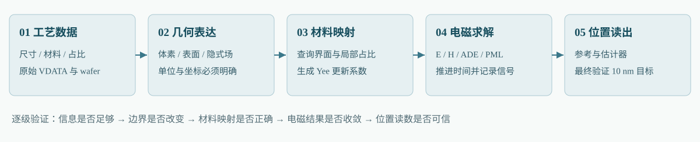
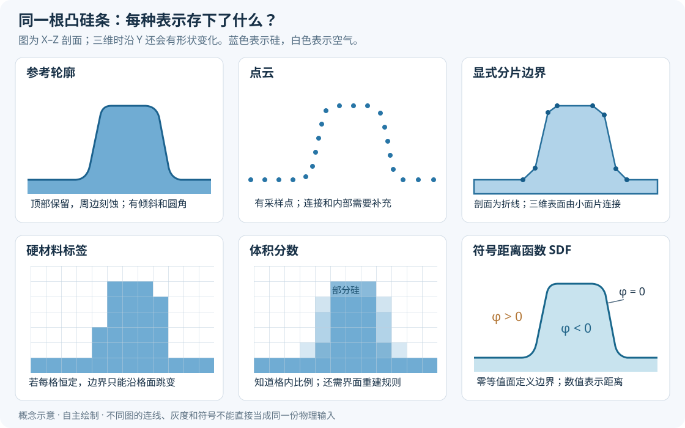
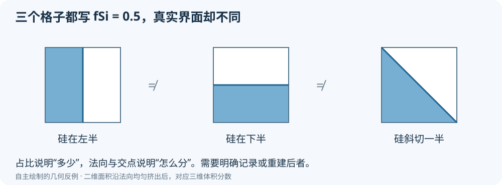
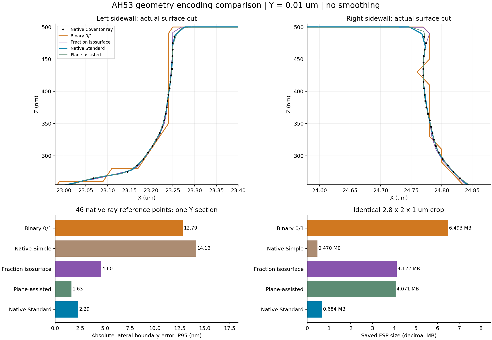
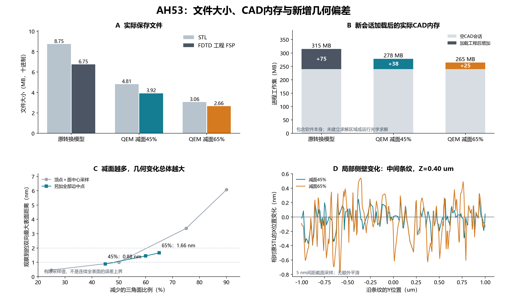
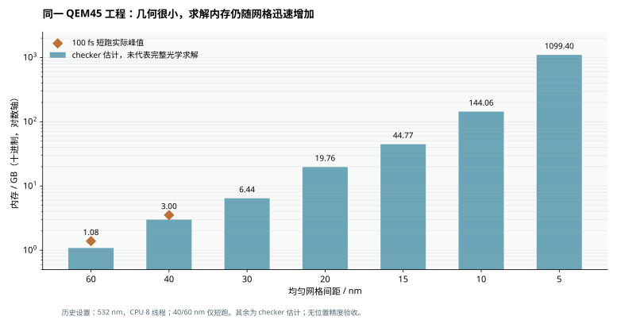
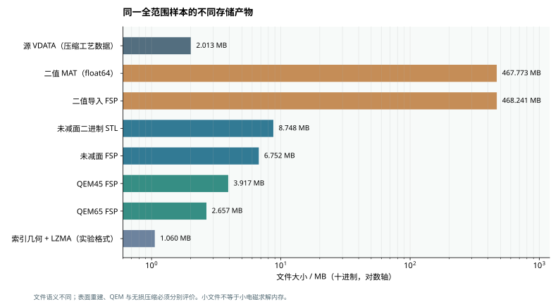

阅读入口：我们到底在选择什么
我们的对象是一块经过刻蚀的硅：AH53 示例中的条形 mark 保留并凸起，周围硅被刻掉，名义高差为 300 nm。工艺模型进一步包含侧壁倾斜、横向侵蚀、局部深度变化与粗糙边缘。现在希望把这块三维硅放进电磁求解器，在 532 nm 照明下计算光学信号，再研究这些形貌变化会让位置读数偏多少。
这件事包含四个问题：怎样记录形状，怎样把形状转到计算网格，怎样计算电磁场，以及怎样从场得到位置。一个文件变小，只说明其中某一步的数据组织改变；要判断有没有帮助，需要追踪后面几步。
本次重点研究的位置偏差目标；1 nm、0.1 nm 作为更严格的扩展档。都不是已通过的验收结果。
比较富体素与显式表面，再汇入相同的材料映射和求解链路，避免只凭后缀选方案。
文献依据、历史实测、工程推断、待验证建议分别标明；不把导入成功等同于光学精度通过。

第一次接触三维文件：按第一部分阅读到“转换”，再用下面的交互图理解边界。想复盘之前的工作：看第二部分的同范围对照表。准备写求解程序：重点读第三部分的接口、边界、资源和验收实验，最后看第四部分的计算器和行动建议。
先分清五个容易混用的“精度”
- 真实工艺形貌的可信度：工艺模型是否经过实际加工数据校准。当前非理想参数是行为模型示例，不能仅凭逼真的外观当作真实设备预测。
- 工艺离散的分辨率：模型在多细的空间尺度上保存信息。已有主样本为 20 nm 工艺体素，原始导出没有界面平面信息。
- 表示与转换误差：体素阈值化、表面重建、坐标量化、减面可能使界面发生变化。
- 电磁离散误差：计算网格、边界更新方法、材料拟合、PML、仿真时长共同影响场和相位。
- 最终位置偏差：同一位置提取方法处理计算信号以后，读数相对参考值偏多少。它是本次选型最终需要验证的量。
例如，“减面新增的采样表面距离不到 1 nm”只是第三项的一部分证据，不能替代“位置读数误差不到 10 nm”。同样，精确保留一个未经校准的工艺模型，也不能保证它就是实际硅表面。详见后文的历史证据和误差预算。
交互理解：同一条界面，三种记录方法
下面故意只画一个二维截面，硅在界面左边，空气在右边。橙色虚线是教学用连续界面。拖动位移或改变网格，比较三种数据记录方式。中间的颜色代表方格内硅的面积份额；推广到三维才是体积分数。这里用小网格数值采样近似面积，尚未涉及 Maxwell 方程。
单材料标签
只记录 0/1；此例按方格中心判定。
占比
保留混合程度；单独一个占比仍不能唯一确定界面。
显式表面
截面中为折线，三维中可以是三角面。
教学例并非 AH53 实测，也不模拟 Lumerical 的二值插值或共形算法。显式表面进入一个只做中心判定的求解器，仍会发生锁格；占比图也没有证明任何电磁等效介质模型。
第一部分 · 从零认识三维表达：同一根凸起的硅条，为什么会有这么多文件？
先记住一个问题：程序读完文件以后，究竟知道了哪些位置是硅、哪些位置是空气，以及两者的分界在哪里？文件能旋转、看起来光滑、后缀叫“3D”，都不能单独回答这个问题。本章用“硅基底上凸起的一根条纹”贯穿说明。条纹四周被刻蚀，顶部保留，侧壁可以倾斜、圆滑或有粗糙度；示意图为作者自主绘制的概念模型，并非 AH53 实测形貌。
先分清四层：形状、文件、材料和计算网格
几何表示决定怎样记录形状：例如用三角形包围硅的外表面，或把空间切成小格并记录每格的材料。文件格式与编码决定把这些记录怎样写进磁盘：文本、二进制、压缩、分块以及字段命名。物理材料决定硅怎样响应光场：介电函数、色散、吸收等。求解离散决定电磁方程在哪些位置、以什么未知量计算。它们会互相配合，但不能用其中一层替代其他层。
例如，STL 里的三角形描述的是物体表面；Lumerical 把它导入为 planar solid 几何对象。给这个对象指定“硅”的光学材料，才完成物理赋值。另一方面，HDF5 是组织数组、属性与分块数据的容器；里面既能放体素，也能放顶点表和三角形索引。因此，“STL 对 HDF5”不能直接等同于“表面网格对体素”。Ansys：STL 导入；HDF Group：分块数据布局。
记事本里看到英文、数字或长串编码，只说明外层写法。英文标签下面可能放着压缩后的数组；二进制三角形也不一定能直接读出坐标。反过来，一份能读懂的文本文件仍可能记录数千万个元素。判断文件内容，需要格式说明、可靠读取器和解码后的字段，不能靠文件大小或后缀猜测。“无损解压”只保证还原编码前的记录，不保证这些记录完整表达了真实工艺表面。
坐标和单位：最容易制造“假精度”的地方
本章约定 X、Y 在晶圆平面内，Z 沿高度。一个坐标数值“0.3”必须说明单位：0.3 µm 是 300 nm，0.3 m 则完全不同。还要说明原点在晶圆中心、裁剪盒角点还是物体中心，以及文件使用哪个轴表示高度。STL 没有标准长度单位；Lumerical 的默认解释是微米，导入时可改变缩放。glTF 则规定长度使用米和右手坐标系。由此可见，格式不同，单位约定也可能不同。Ansys：长度单位说明；Khronos：glTF 坐标与单位。
对我们的课题，一份几何必须同时带上单位、轴顺序、原点、局部到全局的变换、材料编号表和来源。假设几何采样间距为 20 nm，把格心误当格角，就可能整体移动 10 nm；这已经等于本次重点研究的测量偏差档位。坐标写了很多小数，也只代表数字表达能力，不能证明来源模型具有同等物理精度。
只记录表面：点云、三角网格与 CAD 曲面
点云：知道一些表面点，不一定知道点之间是什么
点云可想成拿探针测出一批位置：每条记录是一个 (x,y,z)，还可以附带法向、颜色或测量置信度。对凸硅条，扫描到的顶部点与侧壁点能够勾勒轮廓，但点云本身通常不告诉程序“哪些点应当连接”“下面有没有空腔”。从点云得到封闭实体，要额外做表面重建，并决定如何处理缺测区域、噪声和孔洞。Stanford 的扫描数据说明也特意区分原始测量与已经去噪、融合后的重建网格。Stanford：扫描与表面重建说明。
数量级例子：一百万个点，仅用三个 float32 坐标就需要 12 MB；加上三个法向分量再加 12 MB。这是自行计算的数组下限，不含索引和容器开销。点云适合接收测量数据或检查表面，作为自研电磁程序的直接输入则需要补齐内部材料判定。对已有工艺实体，先删掉连接关系变成点云，通常会增加一次不必要的重建。
三角网格：用一张有折痕的薄壳包住实体
三角网格保存顶点和“哪三个顶点组成一片面”。三点确定一个平面，把许多小面拼起来，就能近似侧壁弯曲和圆角。对于一个无圆角的理想长方体，8 个顶点、12 个三角形已经足够；粗糙表面才需要更多面。它在三维空间中，但每片三角形是没有厚度的二维面。封闭且方向一致的外壳，加上内部材料定义，才能用于表示硅实体。孔洞、自相交、重复面和错误方向会让内部判定变得不可靠；CGAL 为这些检查和点的内外判定提供了独立算法。CGAL：Polygon Mesh Processing。
三角形内部的坐标是连续的，可以把整根硅条平移 3 nm，而不要求移动一个整数格。它仍然是分片平面，弯曲表面的法向会在三角形边处变化。显示程序能把顶点法向插值，使明暗看起来更平滑，但这种着色不会自动移动三角形，也不会恢复几何曲率。PBRT：三角网格与着色法向。
| 格式 | 通常装什么 | 对本课题的重要限制 |
|---|---|---|
| STL | 三角面逐片列出，ASCII 或二进制 | 缺少标准单位和完整材料语义；本流程用旁附清单补充。 |
| OBJ + MTL | 顶点表、面索引、对象/材料分组，可附法向与纹理 | 材质名称能用于映射，MTL 的显示参数通常不够描述光学色散；原规范也有自由曲面语法，不能说所有 OBJ 只能存三角形。 |
| PLY | 顶点和面及其属性，常用于扫描与网格交换 | 能携带颜色等属性不等于已有硅的电磁材料模型；不同读取器支持的属性不同。 |
| glTF / GLB | 网格、场景、变换、显示材质与纹理；GLB 可统一封装二进制资源 | PBR 材质服务于显示，不能直接当作 FDTD 的 ε(ω)。适合教程展示与交互审阅。 |
表中格式依据：Ansys STL、Wavefront 原始 OBJ 规范存档、DIRSIG 官方 OBJ 与材料映射说明、VTK PLY 读取器、Khronos glTF 规范。这些格式携带几何属性的能力，不保证每个应用都会完整读取。
二进制 STL 常规布局为 84 字节头部，加每三角形 50 字节：法向 3 个 float32、三顶点共 9 个 float32，再加 2 字节属性字段。于是 100 万片约 50 MB。STL 重复写入共享顶点；如果改成“顶点表 + 三角索引”，且顶点和索引均为 32 位，则裸数组大小是 12V + 12F 字节。对近似 V≈F/2 的常见大闭合三角网格，100 万片约 18 MB；不含法向、BVH、材料和容器。这是组织方式不同带来的节省，尚未减掉任何面。VTK 二进制 STL 写入实现；PBRT：共享顶点与索引结构。
CAD 的 B-Rep / NURBS / STEP：用曲面公式和连接关系记录边界
B-Rep 是 boundary representation，即边界表示。数学几何告诉程序每张面是平面、圆柱面或样条曲面；拓扑告诉程序面如何通过边、顶点连接成闭合壳与实体。NURBS 是一类由控制点、权重和节点参数定义的曲线/曲面表达；控制点不是把表面全部采样一遍，而是共同确定一张参数曲面。对理想硅条和规则圆角，用少量面和参数就能很紧凑地表示边界。Open CASCADE：B-Rep、几何与拓扑；Open CASCADE：曲线曲面建模。
STEP 是工程数据交换标准体系，常见文件可以携带这类几何、拓扑、装配和属性；它并非“更高精度 STL”的同义词。把已经三角化的粗糙条纹转成 STEP，可能只是把每个三角形包装成一张 CAD 面，也可能通过拟合生成新的曲面；后者需要容差并会改变形状。Open CASCADE 的 STEP 转换器区分几何拓扑转换与名称、颜色等扩展数据转换，这也说明“保存为 STEP”没有自动补齐全部物理语义。Open CASCADE：STEP Translator。
因此，CAD 很适合设计几何和规则参数扫描；面对带有随机粗糙、微沟槽和复杂再沉积的工艺结果，强行拟合少量光滑 CAD 面可能把研究对象本身抹掉。拟合得足够细也可能导致大量曲面片，失去体积优势。是否有利，取决于表面能否由少量可靠参数描述，而不是扩展名是否“高级”。
CSG：保存“怎样组合出来”，而非逐点列出表面
CSG 是 constructive solid geometry，可理解为积木加布尔运算。比如“基底长方体 ∪ 顶部硅条”，或者“完整硅块 − 两侧刻蚀槽”。文件保存积木尺寸、位置以及并、交、差关系；程序按这棵表达式树判断一个位置是否属于硅。OpenSCAD 的基本体和布尔操作就是直观实例。OpenSCAD 官方语法表。
规则结构只需少量参数，变宽、变高、位移扫描很方便。但“刻蚀深度 300 nm”不能唯一确定真实侧壁与粗糙度；用三个理想长方体重新搭出来，不能声称保留了原 VDATA 的工艺结果。把复杂结果替换成 CSG，应被视为明确的物理简化，并比较位置读数变化。
记录空间内部：体素、占比与稀疏结构
规则体素：把三维空间变成可索引的数组
把一块空间沿 X、Y、Z 各切成许多小格，就得到体素。数组 M[i,j,k] 可以保存材料编号，例如 0 为空气、1 为硅。单位、格距、原点和轴顺序说明这个索引对应哪里。均匀格距不必是立方体，允许 dx、dy、dz 不同；非均匀直角网格则要给出每个方向的坐标。VTK 明确区分 structured points、rectilinear grid 和 unstructured grid 等数据组织。VTK：数据集与属性格式。

若 N=NxNyNz，uint8 材料标签占 N 字节，一个 float32 数组占 4N 字节。例如 1000³ 个体素的标签是 1 GB，占比是 4 GB；多种材料分别保存全尺寸 float32 掩模时还会继续相乘。二值数据理论上能按位存储，使 1000³ 个值约为 125 MB，但实际数组库常用一字节或更多；压缩文件的大小又是另一回事。这些数字只说明几何数组，不是完整电磁求解内存。
体素不必意味着每个格子都是一个实心积木。标签可表示格心采样，数值可表示格内平均占比，也可表示节点上的标量场。这三种语义不同。若数据确实表示“格内材料恒定”，边界就在格面；若数据是节点采样，再通过插值定义边界，则边界可以穿过格子内部。记录位置和插值规则必须写明。
体积分数：知道“有多少硅”，还不等于知道“硅在哪里”
设某格硅占比 fSi=0.3，意思是格体积的 30% 属于硅。相比把整格判为硅或空气，占比保留了边界附近的部分信息。但一个立方格里 50% 的硅可以占左半、下半或斜切的一半；三个结构体积相同、界面方向却不同。单个占比不能唯一确定界面法向、位置分布和微小孔洞。这是几何上的信息不足，不是换一个压缩算法就能消除的。

更丰富的边界记录可以包含局部平面 n·x=d，其中 n 决定朝向，d 决定位置；也可以保存网格边与界面的交点及法向。已知这些信息时，重建器不必只靠邻域占比猜测。Dual Contouring 的原始方法使用的 Hermite 数据正是交点与法向，利用这些约束构造表面。Ju 等：Dual Contouring of Hermite Data。
不过，一格内可能同时存在多个界面或三个以上材料，一个平面仍不足以完整表示。占比也不能直接当折射率：30% 硅与 70% 空气怎样影响不同电场方向，涉及界面边界条件、材料色散与求解离散。这里先保留几何信息，后文再决定怎样形成电磁更新系数。
格心、格角和边：同一个数组形状，可能指向不同位置
若 x0 表示左侧格界，则第 i 格中心是 x0+(i+1/2)dx，格界是 x0+i·dx。N 个格子需要 N+1 个格界坐标。若 x0 本来表示第一个采样点，就不应再加半格。节点值也不是单元平均值：线性插值两个节点的值，可以定义中间场值；把一个单元平均占比直接当节点值，会改变数学问题。VTK 因此分别用 POINT_DATA 与 CELL_DATA 关联点和单元属性。VTK：点数据与单元数据。
这件事对 10 nm 位置研究尤其直接：20 nm 的数据如果错位半格，几何本身就平移 10 nm。正确读取轴顺序、原点和采样位置，通常比先讨论复杂减面算法更优先。几何标签在格心，而电磁场分量分布在交错位置时，还需要求解器自己的映射规则。
稀疏体素、RLE、分块与八叉树：少写重复内容
如果一列有连续 500 个硅标签，可以保存“硅，重复 500 次”，而不是 500 个相同数字；这是游程编码 RLE 的基本想法。它对层状、长连续区域有效，对随机交错值可能没有优势。分块结构则把空间切成小砖块：纯硅、纯空气的块只存一个常数，界面附近的复杂块才展开。八叉树把一个立方区域逐级分为八个子区域，允许均匀区域停在粗层级、复杂区域继续细分。原始 GPU 稀疏体素化研究就利用粗内部/外部与细边界来减少存储。Schwarz 与 Seidel：Surface and Solid Voxelization。
这种节省可以是无损的：若一块所有细格都恰好相同，用一个常数代表它，不会丢掉标签。若把“差不多相同”也合并，则引入近似。树还需要节点、索引与遍历开销，数据越零碎越不一定划算。几何在空气中稀疏，不代表空气中的电磁场可以删掉。这里减少的是材料描述；要减少实际场更新区域，还需要改变求解算法与边界处理。
OpenVDB 是成熟的稀疏体数据结构，树、空间变换和元数据彼此分离，适合保存稀疏标量与窄带距离场。它不是简单“每节点只有八个孩子”的普通八叉树，也不是读入后自动变成自适应 FDTD。NanoVDB 把相关结构组织为连续、适合 CPU/GPU 访问的布局。当前官方 FAQ 的精确限制是树拓扑静态，值可以修改；不宜笼统写成“所有内容都只读”。OpenVDB Overview；NanoVDB FAQ。
对我们的用途，可先采用“压缩存储、按块读取、仅在界面块执行昂贵求交”的方式节省预处理内存，再输出求解器实际需要的数组。这样能把存储优化与数值算法分别验证；未经测试，不能把一个体素库的 GPU 友好宣传换算成 FDTD 加速倍数。
用函数、界面高度或体单元表示结构
隐式函数、SDF 与 Level Set：通过数值回答“离边界多远”
隐式表示不逐片列出边界，而定义一个函数 φ(x,y,z)。本章约定 φ<0 为硅内部，φ>0 为空气，φ=0 就是边界。如果 |φ| 还等于到最近表面的距离，它就是 signed distance function，符号距离函数，简称 SDF。例如平面 z=z0 的距离函数是 φ=z−z0。曲面可以由公式定义，也可把函数采样到体素或稀疏树中。Level Set 方法用这样的等值面描述随时间运动的界面；函数不必处处是严格距离函数。Osher 与 Fedkiw：Level Set Methods。
它适合求内外、距离、近界面法向以及形状组合。与只存 0/1 相比，距离值提供了更多局部位置线索；但从二值体素算出的 SDF，描述的是该二值结构的距离，不能恢复被二值化丢掉的真实圆角。若用全空间 float32 存 SDF，大小与其他同尺寸 float32 数组相同。窄带 SDF 只在界面附近存真实距离，远处以常数和符号代替，能节省空间；代价是远处不再提供完整距离。OpenVDB：窄带 Level Set 的三类区域。
高度图和多层界面：适合受限制的三维几何
若每个 (x,y) 位置只需要一个表面高度 h(x,y)，硅从底部一直填到该高度，那么二维数组就能定义三维实体。这叫高度场或常说的 2.5D 表示。比如把顶部 500 nm、刻蚀区 200 nm 以及平滑过渡写成高度函数。800×1400 个 float32 高度仅 4.48 MB，而再乘 50 个 Z 层的同类型三维数组是 224 MB；这是按元素数自行计算的 50 倍差异。
这种紧凑来自强假设：一条竖线最多遇到一个顶界面。倒扣、悬垂、内部孔洞或一列中分离的再沉积颗粒不能由单一高度描述；严格竖直侧壁也需要对不连续高度额外约定连接方式。多层界面可存 h1(x,y)、h2(x,y)…，再给相邻层之间指定材料，适合顺序稳定的膜层。若某层消失、相互穿越或形成复杂拓扑，必须增加规则。这是由函数定义直接得到的适用边界。
因此，高度场可能是我们条纹模型很经济的专用表示，但需要先检查真实工艺结果能否满足假设。不能因为画面从上方看很规整，就丢掉地下或侧壁的多值结构。Gmsh 的 terrain 与 hybrid model 示例展示了高度/离散表面与三维体网格衔接的实际路线。Gmsh：地形、离散实体与混合模型。
四面体、六面体体网格：不仅围住表面，还把内部切开
四面体有四个顶点和四张三角面；许多四面体可以填满硅和空气。六面体像可以变形的小盒子；规则体素可以看成一种特殊几何排列，但一般六面体网格并不等同于规则数组。体网格除节点坐标外，还要记录每个单元连哪些节点、材料和邻接关系。Gmsh 的体划分可以生成四面体、棱柱、六面体等单元，并把边界表面与体单元连接起来。Gmsh：Mesh module。
数量级例子：100 万个线性四面体，仅四个 uint32 顶点索引就需 16 MB，另加节点坐标、材料、边/面连接及每单元未知量。网格能沿曲面局部细化，但电磁求解不只取决于“单元个数”。有限元 FEM 用单元上的基函数近似场；间断 Galerkin 类方法允许单元间的场表示间断，通过数值通量耦合；经典 Yee FDTD 则使用规则交错网格上的差分更新。三者的存储和时间步机制不同。MFEM：电磁有限元应用；MFEM：有限元与 DG 示例。
把 STL 变成四面体文件，不能让现有 Yee 更新公式直接在四面体上工作。这通常意味着新求解器路线或额外重采样。表面三角形与体四面体在屏幕上都带很多线，但作用完全不同。后文比较自研架构时，将把这类内核改变与“增加一个文件读取器”分别估算。
神经隐式、NeRF 与 3D Gaussian：名字里的“三维”不保证适合电磁计算
神经隐式表示把几何函数存在网络权重里。DeepSDF 输入空间坐标、输出带符号距离，因此概念上能回答几何问题；它仍有训练、查询和近似误差，若要给出纳米级界面保证，需要独立验证。NeRF 的经典任务是从视角与空间位置输出辐射亮度和体密度，用照片训练新视角成像；这套密度不是已经标定的硅介电函数。Park 等：DeepSDF；Mildenhall 等：NeRF 原始项目。
3D Gaussian Splatting 用一组有位置、尺度与方向等参数的三维高斯表示场景，重点是快速合成图像。视觉重建成功，不保证得到封闭材料边界、内部膜层和波长相关复介电函数。已有可靠工艺几何时，再训练这些表达会多出一层近似和验证成本。因此本报告把它们列为将来有明确压缩或反演需求时的候选，不作为首版电磁输入优先路线。这个优先级判断是针对我们课题的工程推论。Kerbl 等：3D Gaussian Splatting 原论文。
转换算法究竟改了什么：表面提取、体素化与减面
Marching Cubes：从一个标量场里找出等值面
想象在一个小立方格的八个角上各有数值。先选阈值 t，例如 0.5；判断哪些角高于 t，哪些低于 t。若一条格边两端跨过阈值，就按两端数值插值，估计交点；再把交点连成三角形。遍历所有格子，就得到一张表面。这就是 Marching Cubes 的基本思路。它生成的是输入标量场在指定解释下的等值面，不是直接测得的物理表面。Lorensen 与 Cline：Marching Cubes，1987。
自算一维例子：两个采样点相距 20 nm，数值是 0.2 与 0.8，0.5 交点在线段正中；若变成 0.4 与 0.8，交点在前四分之一，即距第一个点 5 nm。算法能产生小于原采样间距的顶点移动，但这里的“5 nm”来自插值假设，不能当成源数据已经测到了 5 nm 细节。对单元占比使用同样处理时，更要说明平均值怎样转换为节点场。
普通查表还可能遇到同样角点正负配置对应不同连接方式的歧义。Lewiner 等方法研究了这些情况的拓扑处理；所谓拓扑保证必须理解为对特定插值模型和实现条件的保证，不能扩展成“真实工艺没有丢信息”。如果可靠界面交点和法向已经存在，Dual Contouring 是另一条可利用更丰富信息的路线；是否优于 MC，要看源数据和实现质量。Lewiner 等：拓扑一致的 MC 实现；Ju 等：Dual Contouring。
Voxelization：把一个实体重新投到空间格子里
体素化是反方向的问题：给定封闭三角网格，决定哪些格子属于物体。中心点采样只问格心在不在硅里，快但可能漏掉细薄结构；保守表面体素化把所有被三角面碰到的格子标记出来，适合不漏表面的检测，但若把这些整格都当实心，会使物体变厚；占比计算求硅与格子的相交体积，信息更多，但计算更贵。它们回答的问题不同，不能混用同一个“体素化精度”数字。Schwarz 与 Seidel：表面、实体与稀疏体素化。
用每格多个子采样点估计占比，是便于实现的近似；用几何裁剪求交体积则更直接，仍受浮点、退化相交、多材料一致性等问题影响。“表面 → 体素 → 表面”一般不会回到完全相同的网格，因为两次转换可能各自加入采样和插值。验证应该同时比较边界位置、材料体积与最终光学读数。
BVH：加速寻找相关三角形，不改动几何
若有十万片三角形和上千万查询位置，逐一比较非常昂贵。BVH 把三角形按空间位置分组，每组用一个包围盒罩住；包围盒再分组形成树。查询射线或格子不碰某个大盒，就跳过盒内全部三角形。它像目录索引，使程序更快找到相关面，本身不需要把边界变粗。代价是建立树的时间与额外内存。PBRT：Bounding Volume Hierarchies。
CGAL 的 AABB Tree 提供相交、射线与最近点查询，可作为自研几何预处理的候选。BVH 通常改善实际性能，但极端重叠和退化形状仍可能使查询昂贵，不应承诺每次查询都严格 O(log F)。建好的几何加速结构可以在多次划网格时复用；它不能自动减少电磁场数组大小。CGAL：AABB Tree。
QEM 减面：挑选“代价较小”的边合并
设两相邻顶点 A、B 合并为一个新顶点 C，周围若干小三角形就会消失或改变。如何选择 C？经典 QEM 把相关三角形所在平面当作约束，累加 C 到这些平面的平方距离，优先执行代价较小的合并。它因此通常先压缩近共面的冗余区域，在曲率和尖角附近保留更多面；实际行为还取决于边界约束、权重与实现。Garland 与 Heckbert：Quadric Error Metrics，1997。
“减少 45% 的面”是数量目标，不是误差上限。QEM 的局部代价也不等于两表面最大距离，更不是对准位置偏差。随机采样点测到的最大距离，仍可能漏掉未采样的小尖峰。Hausdorff 距离要求考察两个集合中所有点到另一集合的最近距离，再取双向最大；有保证的近似算法或保守包络约束，比“抽几个点很接近”更适合给出边界界限。CGAL 提供包络过滤等额外约束，但这些是附加机制，不能自动归给任何 QEM 实现。CGAL：减面代价与包络约束；CGAL：Hausdorff 距离功能。
对多材料结构，两个材料共享的界面应当由同一份几何约束管理。各材料分别减面，可能出现缝隙或互相重叠；尖端、薄膜和狭缝也需要保护。对研究粗糙度造成的测量偏差的任务，删除一个视觉上不起眼的小起伏，仍可能改变相位或散射。因此减面必须与测量算法的结果一起验证。
六种“变小”要分别看待
| 操作 | 是否必然改变几何 | 实际节省什么 | 验证重点 |
|---|---|---|---|
| 无损压缩，如 gzip / 无损 HDF5 filter | 不改变还原后的记录 | 磁盘、传输；分块读取时可降低预处理峰值 | 解压后数组/字节一致；确认使用的滤镜确实无损 |
| 共享顶点、索引化 | 精确重复坐标和完整属性处理正确时不改变 | 重复坐标与部分拓扑存储 | 保留材料边界、法向等必要属性；容差合并另算近似 |
| 严格共面多边形合并 | 满足共面、边界与拓扑条件时可保持同一表面 | 面数与连接信息 | 近共面容差、孔洞、凹多边形，以及后续是否又三角化 |
| 量化 / float32→float16 | 通常会改变数值 | 每个坐标或标量的字节数 | 坐标范围、量化步长、局部原点、界面位移 |
| QEM 减面 | 通常改变分片平面边界 | 顶点、面、显示与求交成本 | 双向边界误差、体积、特征与位置读数 |
| 平滑 / 曲面拟合 | 改变形状 | 主要改变频谱与外观，未必减小文件 | 真实粗糙是否被去掉、形状收缩与系统偏差 |
表中“保持不变”都有前提。例如按某个容差合并近邻点，就已经允许坐标或连接改变；三角形顶点坐标一样，显示法向也不一定能合并。HDF5 的分块与压缩可以组合，但读出一个块时通常需要处理整块，块大小会影响内存和读取速度；h5py 也明确区分无损压缩和有损 scale-offset 等滤镜。h5py：分块、压缩与 scale-offset。
自行推导一个可核验的量化例子：若每轴坐标都舍入到间隔 q 的网格，单轴误差至多 q/2，单顶点欧氏位移至多 √3q/2；这不是全表面的拓扑、体积或电磁误差保证。若 q=1 nm，顶点界限约 0.866 nm，但多个点合并、薄层塌缩或重新三角化仍需额外检查。一个“小于 1 nm 的坐标误差”也不能直接宣布满足 10 nm 的最终位置指标。
把表示方法放到同一张表里
下表是依据上述定义和来源形成的工程比较，讨论的是可靠输入与预处理，不直接承诺时间步进加速。N 为展开体素数，V 为顶点数，F 为面数，B 为实际展开的稀疏块数，P 为参数或网络权重数。实际文件还会有元数据、压缩和索引开销。
| 表示 | 主要记录量 | 边界怎样确定 | 材料怎样指定 | 适合我们什么环节 | 主要代价或风险 |
|---|---|---|---|---|---|
| 点云 | O(点数) | 只有采样点，通常要重建 | 点属性不自动给出体内部 | 测量导入、表面比较 | 缺测和重建歧义 |
| 三角/多边形表面 | O(V+F) | 显式分片面 | 封闭区域或共享界面标签 | 工艺结果交换、重划网格、连续刚体变换 | 有效实体检查、曲面近似与求交预处理 |
| CAD B-Rep / CSG | 取决于面片或参数数 | 曲面公式、裁剪边与布尔关系 | 实体/区域绑定材料 | 理想基准、规则参数扫描 | 复杂粗糙工艺难以紧凑拟合 |
| 密集材料标签 | O(N) | 由格值语义与插值规则定义 | 每格编号直接映射 | 简单读取、规则数据处理 | 展开体积大；硬标签可能丢界面位置 |
| 占比 + 界面信息 | O(N) 或仅边界存附加量 | 占比结合平面/交点重建 | 每材料占比及界面两侧编号 | 保留工艺边界信息、亚网格预处理候选 | 需要真实可用的源字段与一致重建算法 |
| 稀疏块 / 树 | O(B) 加树开销 | 取决于树中装的是标签、占比还是 SDF | 常数区域与细格属性 | 减少几何存储、分块查询 | 遍历开销；不等于稀疏场求解 |
| 解析/采样 SDF | O(P)、O(N) 或窄带规模 | φ=0 | 符号与区域映射 | 距离、法向、隐式查询 | 采样与重初始化误差、多材料表达 |
| 高度场 / 多层界面 | O(NxNy×层数) | 一层或多层高度函数 | 高度区间绑定材料 | 经检查符合假设的条纹/膜层 | 不能任意表示悬垂、孔洞与拓扑变化 |
| 四面体/六面体体网格 | O(节点+单元+连接) | 体单元与边界面共同定义 | 单元或区域属性 | FEM/DG 等独立求解路线 | 生成与质量控制；不能直接套用 Yee 内核 |
| 神经隐式 / 辐射场 | O(P) 加推理成本 | SDF 可隐式定义；辐射场需另外提取 | 必须另行建立物理语义 | 未来压缩/反演研究 | 训练与误差保证成本，显示目标与电磁目标不同 |
阅读后续实测时，应始终追问三件事：来源已经知道了什么；转换额外假设了什么；求解器实际使用了什么。一份源模型可以同时保留原始体素、用于交换的三角面和用于求解的材料系数缓存。它们承担不同任务，不需要让一个文件包办所有阶段。对本次以 10 nm 位置偏差为重点的研究，选择应由完整误差链和实现成本决定，不能只按最小文件或最好看的截图排序。
第二部分 · 我们已经测试过什么：从 468 MB 的二值模型，到可追溯的表面与减面模型
这一部分用我们自己的 AH53 非理想刻蚀结构，把前面的三维表示概念落到实际文件上。它回答三个不同的问题：文件有没有成功转换？转换后形状改变了多少？转换后的形状能否给出可信的光学位置估计？现有工作对前两个问题已有不少实验，对第三个问题还没有完成方法之间的收敛比较。因此，下文的“成功导入”“几何误差小”都不直接等于“定位精度已达到 10 nm”。
本章依据本机保留的转换清单、几何报告、文件大小、CAD 重开检查和电磁引擎日志重新整理。可下载历史数值摘录与来源和 SHA256 清单。后者记录每份原报告相对于 CoventorProjects 的路径及 JSON 字段位置；公开包不包含原模型、供应商程序或许可证。下文所有 MB 均为十进制，即 1 MB = 1,000,000 字节。
读表前先记住三件事。小范围裁剪与完整结构不能直接比较压缩比例；对原工艺模型的误差与对已经转换的 STL 的新增误差不是同一口径；磁盘文件、CAD 几何内存和 FDTD 求解内存是三个不同量。
2.1 实验对象：一份模型，两个不同的信息来源
主要输入是教学用 AH53 非理想硅刻蚀结果：保护条纹保留下来，周围硅被刻蚀。完整研究区域为 16 × 28 × 1 μm，含一组三条结构；工艺体素间距为 20 nm，对应 800 × 1400 × 50 = 56,000,000 个体素。300 nm 是配方中的名义刻蚀总深度，非理想工艺下实际沟底会随位置变化，不能把这份几何描述为所有位置都精确高出 300 nm。
原始 AH53_Si_300nm_Nonideal/AH53_Si_300nm_Nonideal.vdata 为 2,012,729 字节。它保存材料编号和混合体素的材料占比，但没有保存 PlaneEquations，即体素内部界面平面信息。另外，原工艺工程还保存了第 7 步的原生 wafer。原生 wafer 和这份 VDATA 不能视为完全等价的信息包：导出文件没有保存的界面信息，之后仅凭该文件无法唯一恢复。
这一区别产生了两条实际走过的路线。早期从已保存 wafer 直接导出原生表面，是借助仍然存在的工艺结果；后期通用转换器从独立 VDATA 开始恢复原生模型、再导出表面，不依赖原工程。后者的事后误差检查可以读取原 wafer 作为参考，但这不代表转换器使用了它。两条路线的结果都需要介绍，却不能在讲“任意独立 VDATA 转换”时混为一谈。
| 来源 | 转换时能访问什么 | 实际完成的路线 | 对用户需求的意义 |
|---|---|---|---|
| 已保存的原生 wafer | 原生工艺模型；可以另导出带平面信息的 crop | Native Simple、Native Standard、带 PlaneEquations 的小范围原型 | 适合仍持有原工程时提取表面；不证明仅靠原 VDATA 就能做同样的事 |
| 独立 VDATA | 文件实际保存的材料、占比、坐标等信息 | 二值导入、占比等值面；独立 SDK 导入后导出 OBJ/STL | 更符合“拿到一个受支持格式的 VDATA 就能转换”的目标；不能补回缺失信息 |
数值证据：history_metrics.json 中 binary_full、native_probe、standalone_vdata；来源定位见 provenance 的同名组。
2.2 最先打通的路线：VDATA → 三维二值数组 → MAT → Lumerical
最容易理解的做法是给空间每个小格子贴一个标签：有硅写 1，空气写 0。Lumerical 的 importbinary2 可以把这样的三维数组变成一个几何对象，再给这个对象指定 Si 的光学材料。我们的第一版确实完成了这条链路，并不是把文件后缀从 .vdata 改成 .mat。
- 读取容器。从 XML 读取网格数、体素间距、原点和材料映射；将文本中的 Base64 编码还原为字节，识别
!zlib!压缩块，再逐块解压。该文件实际读到 2564 个压缩块。Base64 是让字节能装进文本的编码，zlib 才负责压缩。 - 读出占比。本例体素记录包含两个材料编号和一个占比编码。
ff=129表示单材料；其他相应记录用ff/128表示材料 1 占比。这里的 0.6 表示一个格子约有 60% 的体积由该材料占据，并不说明这 60% 在格子左侧还是右侧。 - 选择主材料。第一版采用
ff ≥ 64选材料 1，否则选材料 2。至此，“60% 硅”变成“硅”，而“40% 硅”变成“空气”。这是明确的信息损失步骤。 - 建立坐标与补边。采用原体素中心作为采样位置，在每轴两端各补一个零值样本，使外围有明确的空气侧。800×1400×50 因此变成 802×1402×52。
- 保存、导入、复查。将掩模以 float64 数组交给 Lumerical，原生保存为 MAT 7.3/HDF5，重新加载核对，再执行二值导入、指定 Si Palik 材料、保存 FSP 并重开检查。
补边不是装饰。例如 X 方向原中心为 16.01…31.99 μm；补零后是 15.99…32.01 μm。平直的 0→1 过渡在中点达到 0.5，可落回 16 μm 的几何边界。但斜壁、角点和多方向过渡会受到插值影响，不能把这种中点解释推广为“每个体素立方体都无损保留”。
为什么约 2 MB 的 VDATA 变成约 468 MB？
补边后的掩模有 58,469,008 个样本。每个 float64 数值占 8 字节，仅掩模主体就是 467,752,064 字节。加上坐标和容器信息，实际 MAT 是 467,773,472 字节；保存的 FSP 是 468,240,893 字节。膨胀来自三个同时发生的变化：压缩数据被展开、只需表达 0/1 的数用 8 字节保存、整块空间都显式写入稠密数组。
这说明当时的接口路径对本例很不经济，不能据此断言“体素天然比三角网格大 200 倍”。同一个二值数组可以打包成位；材料标签可以用较短整数；均匀区域可以压缩、分块、按需读取。但是，如果导入接口最终仍要求完整 float64 数组，文件层的节省会在这一步被重新展开。文件格式允许什么、接口接受什么、求解器内部存什么，需要分别看。
几何上也出现了代价：材料占比被预先截断，侧壁变化更容易受 20 nm 格子相位影响。这个例子的硅总体积仅从 347.312849 变为 347.302456 μm³，变化约 −0.00299%，看起来极小；但总量接近不能保证局部边界接近。左右不同位置的增减可能互相抵消，而定位算法恰好对这些不对称变化敏感。
本路线已验证全范围几何导入、材料、坐标和保存重开。FSP 中当时的 FDTD 区域只是一条用于截面检查的薄窗口，没有覆盖并求解完整 mark 的光学问题。查看 index preview 所见的离散边界也不等于求解器使用的完整共形材料处理；之后另取真实共形 index，确认二值对象同样能够参与共形处理。共形算法可以处理导入的边界，但不能自动找回此前已经丢弃的占比信息。
原报告项目相对路径：AH53_FDTD_Import/full/manifest.json、full/verification.json；摘录见binary_full。我们没有把“逐体素创建一个长方体”或“逐层堆叠二维轮廓”作为已完成的独立方案；已有数据切片和截面画图不能算这类几何导入实验。
2.3 保留占比再找表面：marching cubes 做了什么
第二种尝试避免先把占比变成 0/1。把每个体素的硅占比看成一个标量样本，相邻样本之间插值，再寻找数值等于 0.5 的位置；这些位置连起来就是一个等值面。可以把它想成在一张逐渐从黑变白的图中寻找灰度恰好一半的线，三维情况下得到的是面。
Marching cubes 的意思是逐个检查由相邻采样点构成的小立方单元：根据哪些角点大于阈值、哪些小于阈值，决定表面从哪些边穿过，再用若干小三角形连接这些穿过位置。我们使用 Lewiner 版本、步长 1，对原占比取 0.5 等值面，没有进行额外的几何平滑。因为交点可以位于两个样本之间，表面坐标不必只能是 20 nm 的整数倍。
但“能产生格子内部坐标”不等于“知道原始格子内真实界面”。体积占比本来是一个格子里的平均份额，把它放到中心点后当作连续场采样，是一种重建约定。两个内部界面不同的格子可能具有相同占比，算法无法仅凭这个数字区分它们。阈值选 0.5 也不自动保证生成的表面逐格保体积。
我们在 2.8×2×1 μm 小范围实际生成了 50,807 个顶点、101,610 个三角面，二进制 STL 为 5,080,584 字节，导入 FSP 为 4,121,884 字节。封闭边与朝向检查通过，Si 体积由占比积分的 4.991276 μm³ 变成表面包围的 4.990098 μm³。它比同范围二值 FSP 小一些，却依然有约十万面：marching cubes 沿采样格逐个铺面，平坦区域也可能留下大量小三角形。
这个方案把原先部分丢掉的占比信息用于重建，因此本截面的侧壁吻合有所改善。它适合作为一个易实现、可追溯的参考转换器。它的局限也很明确：并非原生界面无损重现，导出 crop 的侧面与底面需要人工闭合，闭合检查不能代替自交检查，更没有光学定位误差的验证。
2.4 平面信息辅助：更丰富的输入，仍然是重建原型
一个混合格子只有“硅占 60%”时，缺少方向信息；若再给出一个平面，就能够更明确地描述材料从何处切过格子。平面常写成 nx*x + ny*y + nz*z = d，其中向量 n 表示朝向，d 决定位置。但是，x/y/z 是世界坐标还是格子局部坐标、哪一侧是 Si、d 是否带符号，必须核对，不能看到四个浮点数就直接套公式。
原文件没有这些平面，所以我们从已经保存的 wafer 另导出一个带 PlaneEquations 的小 crop，并用原生射线查询做局部坐标和方向校验。随后把局部平面在体素中心的有符号距离采样出来：纯空气侧取正、纯 Si 侧取负，混合体素保留检查过的平面符号，再对这个场做零等值面的 marching cubes。
这条路线的名字必须准确：它是“平面辅助的中心标量场重建”，不是把每一个原生界面平面精确裁剪后拼起来，也不是经证明处处连续、处处具有正确距离的全局 SDF。相邻格子的局部平面可能并不严丝合缝；取中心样本再插值又增加了一层选择。
实测得到 100,202 面，STL 5,010,184 字节，FSP 4,071,052 字节。它在所检查的一条截面上比单纯占比等值面更接近原生参考，但文件仍较大，格式约定只在这一 crop 做过经验核验。原型建立时的报告留下“导入待完成”的说明；后续导入报告已证明完成 Si 材料指定、保存重开和截面比较，仍然没有时域求解。读历史文件时要把这两个阶段串起来。
2.5 原生 Simple 与 Standard：厂商导出的表面也要验收
另一条路是让 Coventor 自己从原生模型生成表面网格。这样可省去我们自行猜测占比如何变成界面的步骤，但“原生导出”不是“任何设置都无损”。表面网格仍需有限个顶点和面去近似模型，导出模式和参数会影响它的精细程度。
我们分别测试了 Simple 与 Standard。Simple 在 geometryAccuracy=100 时只生成一个很小的网格，小 crop 的 STL 仅 32,028 字节、FSP 469,900 字节；这个 100 是设置值，不能读成“100% 精度”。它在局部侧壁上偏差仍可达约 20 nm。Standard 使用更细致的网格配置，在相同 crop 中约 6116 面，ASCII STL 1,169,933 字节、FSP 684,100 字节，并明显改善所测截面的拟合。
Standard 后来扩展到完整三条结构，生成 177,932 面、88,968 个合并顶点；ASCII STL 33,359,103 字节，而 FSP 为 6,875,316 字节。这一对数字同时说明：同样叫 STL，ASCII 与二进制的存储开销可能不同；导入后的 CAD 又会有自己的几何编码。不能只看一种文件后缀，就假设每个三角面在各环节都占同样字节。
完整范围共检查 630 个原生侧壁参考点，分布在三条结构、每条 21 个 Y 截面及五个高度，左右两侧均参与比较。Standard 的侧壁横向位置误差 P95 为 4.111 nm、采样最大 6.686 nm，CD 误差采样最大约 10.393 nm。CD 是左右边界位置之差；两边各偏一点，宽度误差就可能比单侧误差大。这仍是有限位置的几何抽查，没有认证全表面距离上界或散射场误差。
我们还实际尝试过 Delaunay 网格导出，但安装的许可证没有相应功能，未成功得到该候选。因此它只能记作“尝试受阻”，不能进入成功方法的数值对照。
2.6 在相同小范围里比较：改善体现在哪里
下面统一使用 X=22.6–25.4 μm、Y=−1–1 μm、Z=−0.5–0.5 μm 的 crop。侧壁误差来自 Y=0.01 μm 的 23 个错位高度、左右共 46 个参考点；错开部分体素边界，是为了减轻阈值平台恰好落在采样高度的归属歧义。P95 表示这些已检查点中 95% 的绝对误差不超过该值，不是未检查区域的保证。
| 小 crop 方法 | 输入文件 MB | FSP MB | 侧壁 P95 / 采样最大，nm | 验证做到哪一步 |
|---|---|---|---|---|
| 二值掩模 | MAT 6.031 | 6.493 | 12.791 / 42.189 * | 导入、索引检查；误差口径有特别说明 |
| 占比 0.5 等值面 | STL 5.081 | 4.122 | 4.601 / 11.809 | 表面和导入检查 |
| Native Simple | STL 0.032 | 0.470 | 14.122 / 20.455 | 表面和导入检查 |
| Native Standard | STL 1.170 | 0.684 | 2.294 / 4.008 | 表面、导入及重开检查 |
| 平面辅助原型 | STL 5.010 | 4.071 | 1.634 / 3.283 | 局部格式核验、表面及导入检查 |
* 二值这一行是我们对源 0/1 场作线性插值、取 0.5 得到的参考轮廓，不是实测 Lumerical 真实材料边界。其余候选是直接求三角面与截面的交线。因此该表支持“预二值化会改变局部几何”的判断，不能支持“Lumerical 二值入口必然有 42.189 nm 的边界误差”这种说法。全部候选都没有在这次对照中运行光学时域求解。

数据：small_crop_comparison、fraction_surface、plane_surface、native_full_accuracy。原比较文件为 AH53_FDTD_Alternatives/surface_accuracy_staggered.json，其中 /cases/*/combined 是表中侧壁误差。
2.7 为什么没有采用一个高度图来代替三维结构
高度图为每个 (x,y) 只存一个 z 值，好像地形地图：已知地面高度，默认下面都是实体、上面都是空气。这对没有悬空、回入侧壁、孔洞或多重材料交界的单值表面很紧凑。对于主要是平坦基底和浅刻蚀的 mark，它值得检查；但必须先验证实际形貌是否符合这个假设。
我们做过原生高度与向下射线查询，保存了高度数组，但没有把高度图路线作为本结构的已验证完整导入。两个原生查询接口在陡壁附近甚至会返回不同高度，因此后续侧壁比较采用方向明确的射线交点，避免把不同接口结果混成同一“真值”。
更直接的反例来自体素列：在小 crop 的二值检查里，发现 41 个列沿 +Z 方向出现空气→Si 的转变。这意味着某些列并不是“从底部一直实心到某个顶高”。单个高度值无法同时保存下方空气段和上方硅段。只记最高表面可能把这些局部形状填实，从而改变散射。
因此现有结果只支持“高度场适用于经过单值性检查的子问题”，不支持用一个高度图普遍替代任意 Coventor 结构。类似地，空间 n,k 导入也只做过接口和适用性调研，没有完成本例的 n,k 数据工程及光学对照，不能放入“实测成功”的名单。
2.8 后来建立的独立 VDATA 转换器：输入来源终于满足可复用要求
用户希望能够拿一个独立 VDATA 转换，不能要求它旁边必须还有原来的工艺结果。为此，后来的程序先检查受支持 VDATA 的结构、单位和材料映射，建立不依赖原工程外部引用的工作副本，让本机 SEMulator3D SDK 读取该文件，再通过原生表面输出获得 OBJ，整理为每种材料对应的二进制 STL、材料清单和 Lumerical 导入脚本。该阶段不重新执行沉积、曝光或刻蚀。
“工作副本”需要处理原点、外部文件引用和材料别名；记录这些变化很重要。例如当前 STL 顶点采用局部 μm 坐标，清单记录恢复全局位置的平移量为 (16, −14, −0.5) μm。STL 本身不可靠地保存单位或多材料名称，因此一个可靠转换结果应是“几何文件加元数据”，不能把单独 STL 当成全部语义。
主例实际产生 174,966 面、87,485 顶点，STL 8,748,384 字节，FSP 6,751,518 字节。这是后续共享顶点、压缩、共面合并和 QEM 的共同基准，和上一节直接从原 wafer 得到的 177,932 面 Standard 不是同一个文件。
转换器内部恢复的硅体积为 347.312849 μm³，三角表面包围体积为 348.248468 μm³，差约 +0.2694%。独立转换完成后，再用原 wafer 做 630 点侧壁参考，P95 为 4.088 nm、采样最大 6.680 nm。报告明确写明：转换没有使用原 wafer，参考查询只发生在转换之后。它证明了流程独立性，也暴露了缺失平面信息与网格近似的代价。
这里的“通用”有边界：程序面向已验证的 Coventor VDATA 结构和本机 SDK 支持的版本，且有输入检查；不能把“测试过不同材料、坐标和异常输入”扩大成“任何软件写出的同后缀文件都能无损处理”。没有 PlaneEquations 的输入尤其不能保证恢复原始体素内界面。对我们的课题，保留源文件、单位、材料映射、源 hash 和转换参数，是将来比较方法与定位误差的基础。
证据：standalone_vdata；原清单 VDATA_Converter/outputs/AH53_from_vdata/conversion_manifest.json，独立性检查 information_loss_check.json。
2.9 第一类减小方法：不动几何，只去掉重复和压缩字节
共享顶点：把“重复写坐标”换成“写编号”
两个相邻三角形往往共用两个顶点。STL 仍然在各自记录里重复写这些坐标；索引网格则先列一个顶点表，再让每个三角形写三个顶点编号。例如面 (5,8,12) 只需要读顶点表中第 5、8、12 项。三角形的位置和连法可以完全不变。
我们的 174,966 面基准 STL 为 8.748 MB；改为 87,485 个 float32 顶点和 uint32 三角索引，顶点表 1,049,820 字节、面索引 2,099,592 字节，合计裸几何 3,149,412 字节。这还没有计入法向、加速结构或程序管理开销。压缩为 NPZ 后为 1,421,719 字节，回读三角坐标一致。
随后我们把索引数组直接通过 addplanarsolid 送进 Lumerical，想看能否进一步减小 FSP。结果索引版 FSP 为 6,751,535 字节，STL 导入版为 6,751,518 字节，只差 17 字节，几何 hash 一致。原因是该安装的 STL 导入过程已经合并重复顶点；在它前面再做同样的去重，并没有再消除一份内部冗余。共享顶点仍有利于我们自己的文件和程序，只是这里没有换来额外的 Lumerical 工程压缩。
gzip、NPZ 与 LZMA：无损存档成功，运行内存不会自动随之下降
无损压缩寻找重复或可预测的字节，把它们换成较短的编码，解压时严格还原。对几何来说，必须先说明“无损”的对象：保留顶点、索引和坐标变换，属于几何数据无损；保留 STL 文件头、冗余法向量和所有字节，属于原文件逐字节无损。
| 实际测试 | 压缩后字节 | 回读检查 | 使用前需要什么 |
|---|---|---|---|
| 原二进制 STL + gzip | 3,627,897 | 原文件逐字节一致 | 先解压回 STL |
| 原 FSP + gzip | 2,508,142 | 原文件逐字节一致 | 先解压回 FSP |
| 共享顶点与索引 + NPZ | 1,421,719 | 三角几何一致 | 读取数组，再交给前处理器 |
| 共享数组 + LZMA6 自描述存档 | 1,059,637 | 顶点、索引、平移等数组逐位一致 | 使用我们的解码器；不是厂商原生格式 |
我们实际比较了 40 种编码组合，包括 float32 位模式的 XOR 差分、按列排列、字节重排，以及整数索引差分，再接 zlib 或 LZMA。相邻数据相似时，这些预处理可能让压缩器更容易发现模式；但本例最好的结果是直接原数组加 LZMA6，说明“算法看起来更复杂”不保证更小。该档压缩约 1.01 秒，解压及校验约 0.102 秒，比原 STL 小 87.89%。
实验扩展名 .vmeshx 是我们自己的封装，不能直接被当作 Coventor 或 FDTD 标准文件。它适合传输、归档和自研程序的读取入口；解码后，顶点与索引仍要在内存中展开。即使整个几何文件缩到 1 MB，传播电磁波所需的 E/H 场、材料辅助变量和 PML 也不会因此缩到 1 MB。
证据：lossless、entropy、cad_storage；原报告分别位于 VDATA_Optimization/lossless、entropy、storage。
2.10 第二类减小方法：严格共面的三角形合成一个多边形
如果很多小三角形真的位于同一个平面，它们内部的分割线只是存储方式，删掉这些内线可以用一个大多边形表达同一块表面。关键是“真的共面”：如果只是看起来很平，合并仍可能移动表面。我们的实验对源 float32 坐标使用精确整数共面判定，只合并严格共面的邻接面；边界点、凹形边界和孔环都要妥善保留。
结果 174,966 个三角面变成 168,281 个多边形面，仅减少 3.82%；顶点由 87,485 变为 86,703。坐标没有移动，边方向、封闭性检查通过，精确有向体积差为零。这个例子不是由大量完全平面拼成的规则积木：保留刻蚀形貌的表面有大量不严格共面的三角形，所以能合并的比例有限。
FSP 从 6,751,518 降到 6,592,807 字节，只减少 2.35%，实测导入阶段 CAD private commit 没有改善。更意外的是，读取不同长度的多边形 facet 时，接口返回全局补齐的 256×2×168281 个 double，即约 689 MB 临时数组；相关查询的 CAD 峰值曾达到约 2.38 GB。虽然实际多边形边界没有这么多有效数值，补齐布局仍会占空间。
这次实验体现出一个对自研程序很重要的因素：几何数学表示更简洁，不保证现有 API 的数组布局更节省内存。如果自己实现多边形容器，可以使用变长索引和偏移表；但还要承担凹多边形、孔、相交和稳健裁剪的复杂度。当前模型上的收益不足以单凭“面数少一点”就选择它作为首版核心表示。
证据：planar、planar.audit、cad_storage。这是与已有 STL 同一表面的重编码，不会修复 STL 相对 VDATA 已有的近似。
2.11 第三类减小方法：QEM 用少量几何改变换取更少的面
QEM 是 Quadric Error Metrics，常译为二次误差度量。可以把一个顶点周围的三角面各看成一张平面，记录“新点偏离这些平面多远”的平方代价；尝试把一条边的两个端点合成一个点，并优先执行代价较小的合并。不断合并后，顶点和面变少，原来的形状被较少的三角形近似表达。
它和 gzip 有本质区别：QEM 会移动或删除几何自由度，通常不能还原原网格。它和额外表面平滑也不是同一个操作：本次没有运行平滑滤波，但减面本身仍可能改变局部粗糙度、缺口和不对称性。QEM 的内部代价值不是我们课题的定位误差，也不是严格的最大表面距离，所以必须另外验收。
本次在同一独立 VDATA 转换基准上测试了七档。表中的“减少 45%”指删除约 45% 的三角面，保留约 55%，不是保留 45%。误差是简化结果相对于已有基准 STL的新增偏差；无论这一列多小，都不能把前面约数纳米的 VDATA 重建偏差抹掉。
| 减少三角面比例 | 剩余面数 | STL MB | 采样双向最大新增距离，nm | 采样范围说明 |
|---|---|---|---|---|
| 0%，原基准 | 174,966 | 8.748 | 0（自身比较） | 已有转换误差并非 0 |
| 25% | 131,224 | 6.561 | 0.462 | 顶点及面中心 |
| 45% | 96,230 | 4.812 | 0.882 | 额外加入边中点的更密检查 |
| 50% | 87,482 | 4.374 | 1.009 | 顶点及面中心 |
| 60% | 69,986 | 3.499 | 1.446 | 更密检查 |
| 65% | 61,238 | 3.062 | 1.658 | 更密检查 |
| 75% | 43,740 | 2.187 | 3.367 | 顶点及面中心 |
| 90% | 17,496 | 0.875 | 6.070 | 顶点及面中心 |
“双向”表示既从原网格采样点找简化网格最近距离，也反过来检查，以减少只查一个方向漏掉形状的风险。但有限采样依然可能漏过两个点之间的最大值；45% 档的 0.882 nm 不能写成“任何地方都小于 1 nm”。网格封闭、欧拉特征和面朝向检查也不能证明没有自交。CGAL 的包络约束和有界 Hausdorff 验收属于已调研、尚未本机运行的后续方向。
45% 和 65% 候选还检查了截面侧壁与 CD。45% 的采样最大新增侧壁 X 变化约 0.724 nm、CD 变化约 1.021 nm；65% 分别约 1.401 nm、2.135 nm。它们比看起来很小的总体积变化更贴近形貌关注点，但仍不是光学反演位置偏差。特别是左右侧变化方向不同时，微小几何变化也可能改变不对称散射，不能只依据总体积验收。
这两个候选实际保存并重新载入 Lumerical。45% FSP 为 3,917,022 字节，65% 为 2,657,310 字节。新隐藏 CAD 会话加载后，private commit 相比空会话的增量从原模型约 81.94 MB 降为 43.59 MB 和 31.28 MB；工作集增量则约为 75.12、38.41、24.67 MB。两种内存计数含义不同，不能混在同一列比较，也都不是求解器电磁场内存。

当前非零 QEM 优化主要验证单一实体材料。多材料若各自独立简化，同一界面可能被两边分别移到不同位置，形成缝隙或重叠。preserve_border 保护的是网格开边；闭合硅外壳没有开边，开启它不等于保护了材料共界面、每个粗糙度峰和所有细小缺陷。多材料路线需要共享界面或显式约束，不能直接套本次百分比。
数据：qem、qem_candidates、cad_storage；原来源为 VDATA_Optimization/qem/summary.json、optimization_summary.json、storage/storage_comparison.json。
2.12 真正运行过电磁求解的是哪些测试
前面的多种格式比较主要发生在几何前处理与 CAD 阶段。后来资源研究在 45% QEM 模型上加入了光源、PML、监视器和 FDTD 区域，才实际运行两个短时性能测试。光源是中心 532 nm、20 fs 时间脉冲的 Gaussian 光束，从上方向下入射、X 偏振；监视器只记录 532 nm。中心波长和单个记录频率不意味着时间脉冲在数学上严格单频。
| 名义均匀网格 | 实际网格维度 | 实际物理推进时间 | 墙钟时间 | 实测峰值 RAM | 按短跑推测 1 ps |
|---|---|---|---|---|---|
| 40 nm | 404×704×107 | 约 100 fs | 233.724 秒 | 3.532 GB | 约 27.98 分钟 |
| 60 nm | 278×478×79 | 约 100 fs | 70.335 秒 | 1.387 GB | 约 7.39 分钟 |
这两次使用 CPU、一个进程和八线程，100 fs 测试关闭自动提前终止以便计时。40 nm 的墙钟中，初始化约 65.11 秒、推进约 160.64 秒，其余用于保存等；60 nm 则约 22.90 秒初始化、41.61 秒推进。1 ps 一列只是相同设置下的外推，不是已经完成的 1 ps 求解。
其他 30、20、15、10、5 nm 以及局部渐变网格档位是预检内存与时间估计，没有都实际分配并运行。40 nm 在 Si 中约只有 3.2 个点覆盖材料内波长，现阶段只适合说明性能规模；没有完成网格、PML、时长或材料拟合精度的收敛验收。它们也不能证明 45% QEM 相比原网格的光学误差足够小，因为没有做同设置、同收敛条件下的配对光学比较。
把这一结果和前面的 3.917 MB 几何工程放在一起看，差别就很直观：一个几 MB 的 FSP，运行时可以需要几 GB。求解器还要保存整个计算域中的电磁场、材料系数、色散辅助变量、吸收边界和监视器数据。压缩文件或减少表面面数，主要降低读取、几何查询和建模成本；是否能降低场内存，最终取决于所需电磁网格和数值算法，而不是 STL 有几 MB。
数值来自fdtd_performance；原始汇总路径为 AH53_FDTD_RunStudy/results.json 的 /benchmarks。各项实际运行与外推在证据文件中分别标明。
2.13 这些历史实验对 10 nm 定位课题意味着什么
现有证据已经足够说明：第一版二值导入的文件膨胀不是无法避免的；表面表示、共享顶点、无损存档和适度减面都有各自可测的价值。现有证据也说明，不能把几何误差数字直接替换成定位精度数字。一个 6 nm 的边界误差究竟造成 0.1 nm、1 nm 还是更大的反演偏差，要由光场、照明、收集光路和估计方法的敏感性决定。
对主目标 10 nm，首要任务不是继续把所有文件压到最小，而是建立同一输入、相同物理条件下可重复的参考结果，测量不同表示给位置估计增加多少偏差。1 nm 和 0.1 nm 应当作为更严格的后续档位；20 nm 工艺采样仍可以在数学上施加 1 nm 甚至更小的刚体平移，但这不代表它已经包含相应尺度的真实刻蚀形貌。要分别检验“计算已定义模型的小位移”与“模型本身对真实器件的准确性”。
| 现有证据支持的结论 | 尚不能推出的结论 | 自研 FDTD 下一步应验证 |
|---|---|---|
| 独立 VDATA 可经已验证 SDK 路线生成可导入表面 | 任意 VDATA 版本都无损；缺失信息可以自动恢复 | 输入契约、材料映射、界面重建与异常文件处理 |
| 索引网格和压缩可大幅降低存档大小 | 场数组内存自动同幅下降 | 分阶段记录读入、几何前处理、场分配及峰值 |
| QEM45 的有限采样新增距离约 0.882 nm | 全表面误差小于 1 nm；定位误差小于 1 nm | 更严格几何验收、粗糙度保持及位置估计配对误差 |
| 两个粗网格短跑提供了实际性能参考 | 已完成可靠光学结果；已验证所有输入方式等价 | 几何表示、边界处理、网格与时长共同收敛 |
后续两条实现路线都应沿用这份证据边界：表面路线以未减面的可追溯网格作为起点，体素路线明确标签、占比和平面信息各自保存了什么；两者最终都要对接自研求解器的材料离散。在相同物理模型上比较恢复的位置偏差，才能判断哪个方案在我们的精度目标和工作站资源下更合适。
面向本课题的工程选择 · 研究与方案，尚未完成新电磁验收
第三部分 · 从三维文件到自研 FDTD：真正需要保留下来的是什么
当前最实用的起点，是把未经减面的原生转换 STL 与材料、单位和坐标元数据作为首个三维入口，同时保留读取富体素的第二个入口。求解内核接收经过验证的 Yee 网格材料系数，避免让内核直接依赖某一种文件后缀。这是一项针对现有文件和代码的工程建议，不是“STL 天生比体素准确”的定理。若将来能够可靠取得 Coventor 的材料分数、界面平面及其语义，直接从富体素生成求解系数可能更忠实，也可能更快。
选型的验收指标是最终读出的位置变化，主目标为 10 nm，并单独讨论 1 nm 与 0.1 nm 的更严格档位。文件大小、读入时间、峰值内存、曲面距离、体积误差都是辅助指标。它们帮助发现问题，却不能单独证明位置偏差已达标。本章给出的误差预算、架构和实验矩阵均为待执行方案；这次调研没有新增电磁求解结果。
当前数据有三个必须保留的事实：原始 VDATA 的工艺体素为 20 nm；这个文件没有导出 PlaneEquations；原生表面导出本身是近似过程。因此，“未减面 STL”是减面比较的基准，不等于未经近似的真实晶圆。
先分清四层：文件、几何、离散材料、电磁场
把三维结构交给程序，可以类比把一张建筑图交给施工队：图纸的压缩格式、墙面的位置、地面划分的测量格子，以及每个格子上测到的量，是四件不同的事。对应到本课题：
- 文件层：VDATA、STL、HDF5 等负责把数据放进磁盘。文件可压缩、可分块；文件越小，不代表后续所有计算都越小。
- 几何层：回答“空间中的这一点属于 Si 还是空气”“两种材料的界面在哪里”。三角面、标签体素、体积分数、解析实体都是不同回答方式。
- 离散材料层：根据本次计算网格，确定各个场分量如何看见材料和界面，生成更新系数、界面修正、色散模型索引。
- 场与读出层：逐时间步推进 E、H 及辅助变量，再提取复反射场，经光学读出得到位置。决定求解内存的大部分数组位于这一层。
STL + 元数据 ──→ 三角表面查询 ─┐
├─→ 几何到网格映射 ─→ 材料更新系数 ─→ Yee 时域推进 ─→ 复场 ─→ 位置
富体素 + 元数据 → 体素/界面查询 ─┘
↑ 原始来源可不同 ↑ 算法要验证 ↑ 不必知道原来是哪个后缀
两份输入若在同一计算域、同一网格上生成完全相同的材料系数，使用相同的源、PML、监视器和时间推进算法，后面的场求解成本应基本相同。差异通常留在读取、预处理、几何内存和生成系数的时间。只有当更好的界面表示让我们在较粗网格上达到同一位置误差，才会进一步降低求解成本。这是本报告的工程推论，应通过对照实验验证。
Yee 网格究竟是什么，为什么 STL 不是 FDTD 的计算网格
常见 FDTD 把空间分成规则或分级的长方体网格，在不同位置保存 Ex、Ey、Ez、Hx、Hy、Hz。电场与磁场在时间上也交错更新：先由附近电场的变化计算磁场，再由附近磁场的变化计算电场。Lumerical 官方明确其 FDTD 使用笛卡尔网格和交错的 Yee 场分量；STL 只是导入几何的一种方式。来源：Ansys FDTD 求解器说明。
例如，在均匀、无损、各向同性材料内，某个 Ex 更新可概念性写为下面的形式。它只用于解释数据依赖；真正实现还要处理索引偏移、源项、边界、色散与数值稳定性。
Ex(新) = Ex(旧) + Δt / (ε₀ εr) × [ΔHz/Δy − ΔHy/Δz]
这里使用的是相邻场数值的差，不是三角面的大小或顶点编号。三角面可用于判断界面穿过了哪个格子、穿过多少，但在普通 Yee 内核中不会让程序“沿着 STL 三角形逐面传播光”。如果选择四面体有限元、非结构有限体积或 DGTD，则属于另一类空间离散方案，程序的数据布局和稳定性分析也会改变，不能只换扩展名就获得。
工艺体素与电磁网格不能强行一一对应
Coventor 的 20 nm 体素描述工艺模型的空间离散。FDTD 的 10、20 或 40 nm 网格描述光的数值传播。二者的原点、范围、尺寸和每个数据值的采样位置可以不同。FDTD 还需要上方空气、衬底延伸、光源、监视器和吸收边界；所以只数 VDATA 内的体素，会低估整个光学计算域。
还有一个容易忽略的半格偏移：体素数组的数据可能代表小方块的中心，也可能代表格点处的采样值。把“角点原点”当作“第一个中心”，会在每个相关方向引入半个体素的平移。20 nm 数据上的半格就是 10 nm，已经等于本课题第一档位置目标。格式协议必须写清楚 origin_kind，不能只写“原点”。
把 FDTD 网格缩到 1 nm，可以更细致地求解给定几何，却不会自动恢复工艺文件中已经丢失的 1 nm 粗糙度。反过来，20 nm 的工艺采样也不意味着位置读出只能按 20 nm 跳变：若界面模型可信，可连续平移这个模型，再用亚网格映射表示其位置。连续移动模型与恢复未知物理细节是两种不同能力。
最影响精度的一步：把材料边界映射到 Yee 网格
想象一面倾斜的 Si 侧壁穿过一个计算格子。格子的一部分是 Si，另一部分是空气。若只看格子中心属于哪种材料，侧壁稍微移动时，整个格子可能保持不变；越过中心后，又突然全部改变。这种离散跳变会给 CD、相位和位置扫描带来非物理变化。解决它，需要知道“界面怎样穿过格子”，不能只说“导入成功”。
| 方法 | 它实际做什么 | 需要的数据 | 主要限制 |
|---|---|---|---|
| 单点材料判定 | 在各场采样位置确定一个材料 ID | 标签查询或实体内外判定 | 容易形成阶梯；小位移可能不改变任何系数 |
| 子采样体积分数 | 把一个格子再取多个样点，估算各材料所占比例 | 可多次查询的几何 | 采样本身有误差；有比例仍不等于有正确电磁更新式 |
| 三角面与单元相交 | 通过表面相交获得界面位置、方向及局部分区 | 可靠、定向、封闭的表面及材料两侧定义 | 薄层、共享界面、自交和近退化交点需要稳健处理 |
| 体积分数 + 法向 + PLIC | 在界面格子内重建一张切分平面 | 分数 f、单位法向 n，以及网格坐标 | 一张平面不能表示同格内的多个分离界面或复杂曲率 |
| 共形/亚像素材料映射 | 利用局部界面信息构建更符合 Maxwell 边界条件的更新 | 上述几何量及适用的材料模型 | 需要验证稳定性、色散、高反差、角点与多材料交会 |
前四行解决“界面在哪里”；最后一行进一步解决“电磁场应该如何跨过这个界面”。把几何分数算准确，并不自动得到正确的共形 FDTD。
为什么只有“占 30%”还不够
f=0.3 只告诉我们这个格子里 Si 的体积占 30%。这 30% 可以在左侧、右侧、顶角，也可以被分成两块。PLIC（分片线性界面重建）额外用一个方向 n，寻找切平面 n·r=α，使其切出的体积正好匹配 f。已知法向后，由分数反求平面位置有成熟几何算法。它是一种局部重建约束，不是从单个分数唯一找回原表面的魔法。来源：Scardovelli 与 Zaleski，2000。
当前 VDATA 缺少界面平面信息。如果从邻近分数估算法向，应在数据中标记 normal_source=estimated，保存估计方法和尺度。不能把估计法向命名为 Coventor 原始法向。在尖角、薄膜、双侧壁靠得很近的格子里，单一 f 与 n 的模型可能不够，需要多界面描述、局部加密，或回退到可验证的表面表示。
“混合材料”为什么不能只平均折射率
对局部近似平面的两种无损、非色散、各向同性介质，电场沿界面的分量与垂直界面的分量满足不同边界关系。常见亚像素方案因此采用方向相关的等效介电常数：沿界面为算术平均，垂直界面为谐均值，再按法向旋转回全局坐标。合理设计可以减少倾斜界面的阶梯误差；锐角的场奇异性仍会影响收敛。来源：Farjadpour 等，Optics Letters，2006。
ε∥ = f ε₁ + (1−f) ε₂ ε⊥ = 1 / [f/ε₁ + (1−f)/ε₂] εeff = ε∥ (I − nnᵀ) + ε⊥ nnᵀ
这里 n 是长度为 1 的法向，I 是单位矩阵，nnᵀ 表示取出法向分量的投影。这个三乘三矩阵叫“张量”：本来各自没有方向偏好的两种材料，在一个被界面切开的数值单元内，也可能需要方向相关的等效响应。一般各向异性界面的处理还更复杂，不能机械套用两个标量平均式。来源：Kottke、Farjadpour 与 Johnson，2008。
用于理解的数值例子：若 ε₁=12、ε₂=1、f=0.5，则 ε∥=6.5，而 ε⊥≈1.846。两者相差很大。用一个“平均 n”同时处理所有场方向，会忽略这种边界条件差异。实现时还应围绕各 Yee 电场分量的实际采样位置计算相应系数，不能把格子中心的一组数直接无区别复制给 Ex、Ey、Ez。
“共形”通常指计算方法考虑了未与笛卡尔格线重合的材料边界，并不意味着所有小方格都被换成了贴合表面的弯曲网格。具体方法可能使用长度、面积、分数、法向或等效张量；不同软件采用的“共形”并非完全同一个算法。
我们的 Si 在 532 nm 有吸收：为什么这会改变算法选择
几何只告诉程序“这里是 Si”。电磁计算还需要 Si 怎样响应光。复折射率写为 n+iκ，介电常数为 εr=(n+iκ)²；κ 描述吸收。532 nm 的真实 Si 不能随意当作折射率 2 的透明演示材料。
时域中的色散意味着材料的响应带有记忆。常见方法用若干极化辅助变量 P 描述这段记忆，随 E、H 一起推进，这类实现常称 ADE。多加一个色散项，通常就要增加相应的状态和计算。材料表中的 n、κ 需要拟合成适合时域的响应模型；一个频率上的复数不能直接当作任意宽带瞬时更新常数。来源：Meep 材料与极化方程。
上一节的无损介质平均式不能不加论证地当作色散 Si 的完整实现。特别是法向谐均值会改变频率响应的函数形式，时域实现可能需要额外状态或不同界面公式。Meep 当前文档说明其亚像素平滑只处理瞬时介电项，色散贡献不进行这一平滑，不能据此保证色散边界也保持同样的收敛阶；文档还列出局部平面、角点和材料函数成本等限制。来源：Meep 亚像素平滑适用范围。
Lumerical 的共形方法则有不同的实现和范围。官方说明它可处理两种色散介质的界面，并在同一单元出现两种以上材料时回退到阶梯处理；不同 variant 对金属和 PEC 的策略也不同。因此，不能把 Meep 某种亚像素方法的限制扩展成“所有共形算法都不能处理吸收”，也不能把 Lumerical 的能力当成几行平均代码已经实现。来源：Ansys 网格细化选项。
本地已有一个具体提醒：532 nm 性能试跑保存的材料库值约为 n=4.150104、κ=0.043935；时域拟合值约为 n=4.149922、κ=0.048182。κ 的相对差异约 9.67%。这不是本次重新测量的材料数据，也不直接等于位置误差，但说明“材料拟合误差”必须进入位置敏感性测试。只比较 STL 和体素，而忽略这个差异，可能把材料误差错误归因于几何格式。
Lumerical 为什么提供 STL 入口，它还考虑了哪些因素
Lumerical 并没有只选择 STL。需要区分不同入口保存的是什么信息：
| 入口 | 传入内容 | 材料如何指定 | 本课题最要注意的事 |
|---|---|---|---|
| STL | 物体的显式三角表面 | 导入后给对象分配材料；多材料通常分别导入 | 文件本身没有可靠的物理单位和完整材料映射，要携带外部元数据 |
| Binary spatial / importbinary2 | 对象存在/不存在的 0/1 空间数组 | 每个导入对象分配材料 | 非零输入按 1 处理；不能直接用 0.3 表示“30% Si” |
| Spatial n,k | 空间折射率分布 | 响应本身写入数据 | 官方入口针对单频空间数据，不能替代完整多材料色散数据库 |
| 解析对象、平面实体等 | 尺寸参数、多边形或其他几何边界 | 对象关联材料 | 适合可用少量参数准确描述的结构；不应为了统一格式强行三角化所有平面层 |
STL 在 Lumerical 中导入后按平面实体处理。其价值在于显式保存边界，可以在后续改变计算网格、整体位置或姿态时再次求交，而不必先把形状绑定在某个求解网格上。官方同时指出 STL 缺少长度单位、多面片会增加加载显示成本、多材料需要对应对象。来源：Ansys STL 导入说明。
二值导入也不能简单概括成“原封不动的小积木”。官方说明会对二值数据插值，并以 Binary Threshold 定义边界，默认阈值为 0.5；视口不一定显示求解边界的全部细节，应通过 index monitor 核对。因此，比较时要记录二值采样位置、阈值和实际材料网格。来源：Ansys Binary spatial data。传入任意非零数都会被视为 1 的接口约定见 importbinary2 官方命令。
Spatial n,k 的单频限制应单独理解：它不意味着“所有体素形式都不能使用色散材料”。以几何掩模建立对象、再给对象指定色散材料，与直接导入一个频率的 n,k 场，是不同路线。来源：Ansys Spatial n,k。
可合理推断的工程考虑：显式表面便于 CAD 交换、任意网格重建、连续刚性变换和界面查询；数组入口便于成像或已栅格化结构；解析对象便于参数扫描。统一接到材料网格，使用户能够选择最接近其原始信息的入口。我们不能声称知道厂商内部到底用了哪种 BVH、三角相交容差或特定的闭源系数构造；官方明确其共形实现含专有修改。来源：Ansys 共形方法背景。
我们的现有程序处在哪一步
以下来自本次对本地 README、实现代码和历史记录的只读核对，不把目录名当成功能证据。详细来源保存在 solver_context.json。
| 项目 | 已经有的基础 | 尚未成为正式能力 | 适合复用什么 |
|---|---|---|---|
| MarkSim | WSL Meep；二维周期 Jones；材料与几何协议；理想自参考信号和位置解调；小型三维无损体素冒烟 | 任意非理想三维体素 → 完整三维散射 → 有限 Mark 位置读出 | 参考场归一化、相位约定、光路、位置指标、来源记录和对照算例 |
| MarkSimFDTD | Windows NumPy + fdtd 0.3.5；二维周期矩形截面；真实时域推进和双偏振复反射矩阵 | 三维工艺表面、通用亚像素、宽带 ADE、有损 PML 组合；此分支没有位置模块 | 可读的 Yee 入门实现、基本求解管线、接口与错误检查 |
| FDTD-core-reconstruction | 本次仅查到工具目录 | 该目录内没有可验证的源码或 README | 不能据此断言已经存在第三套三维内核，也不能断言其他位置不存在 |
特别要分清上游库能力与本地适配器能力。flaport/fdtd 官方项目本身提供三维和可选 GPU 后端；本机 MarkSimFDTD 的实际代码固定 NumPy，并建立 (nx+1,nz,1) 的二维网格。改一个后端名称，不会自动补齐三维散射投影、真实 Si 吸收、界面处理和位置读出。来源：flaport/fdtd 官方仓库。
MarkSim 的三维冒烟使用了材料函数、无损介质和 eps_averaging=False，检查过材料查询和有限场传播；它没有完成三维 Jones 或位置收敛。现有二维适配器的限制也不代表 Meep 求解器本身没有三维能力。
渐进升级与新架构如何比较
| 路线 | 工程价值 | 最主要的新增工作 | 建议定位 |
|---|---|---|---|
| 扩展 MarkSim / Meep 适配 | 成熟时域内核可用于构建独立对照，保留现有读出规范 | 可靠三维几何与色散接口；近远场/角谱输出；有限照明读出；网格收敛 | 三维参考和算法研究平台；须核实其界面平滑适用域 |
| 扩展 MarkSimFDTD | 代码容易逐段理解，便于验证更新方程和数据流 | 三维布局、色散/PML、通用界面系数、性能优化与位置模块接回 | 教学与小算例基线；不能直接承诺大尺度三维生产性能 |
| 新三维内核 + 复用现有应用层 | 从一开始按三维内存、CPU/GPU与边界数据设计 | 完整数值验证、稳定性、边界、材料、监视与资源管理 | 若三维工艺扰动与大量扫描是长期主线，值得并行评估 |
建议保留现有两个分支作为基线，新建稳定的“几何到网格”接口，然后用同一组小算例决定哪条求解路线继续。无需为了开始比较 STL 与体素，先从零写完所有商业级求解功能；也不宜把二维代码改到能够运行，就宣称三维研究平台已经完成。
建议的数据协议：双几何入口，一个可追溯的中间层
下面是拟议协议，并非声称当前程序已经输出这些文件。目的在于把 Coventor 专有读取、几何计算、材料模型和 FDTD 内核分开，允许独立检查每一步。
model/ manifest.json # 单位、坐标、材料表、哈希、来源与误差说明 geometry.h5 # 可有 surface、voxel、interfaces 多种表示 materials.json # 光学材料名称、表格来源、有效波段与模型 mapping_cache/ # 可重建的几何到网格结果，按完整键值缓存 validation/ # 非对称轴序样例、截面、体积、边界与来源检查
| 内容 | 最低应保存的信息 | 为什么需要 |
|---|---|---|
| 坐标与长度 | 明确单位；右手坐标；x 跨条纹、y 沿条纹、z 向上；局部到全局变换；体素角点/中心语义 | 防止尺度差 1000 倍、轴互换、镜像或半格平移 |
| 表面 | 顶点数组、索引三角面、法向方向、界面两侧材料 ID、边界/裁剪标签 | STL 缺少的信息由协议补齐；共享界面只能有一个一致几何定义 |
| 体素 | shape、spacing、origin、轴序、标签类型、背景 ID；必要时分块 | 可直接查标签，也能以块方式读取而不一次展开全体 |
| 富界面数据 | 材料分数、法向、平面偏移、材料对、来源为原生/估计、算法和精度记录 | 保留亚体素信息，明确哪些信息经过推断 |
| 材料 | ID → 名称 → n,k 来源 → 时域拟合；波段、单位、温度/模型条件（已知时） | ID 不是折射率，也不能对材料编号做线性插值 |
| 来源与质量 | 原 VDATA 哈希、导出版本、平面字段是否存在、裁剪、表面提取和减面参数 | 区分原始信息、重建误差与减面附加误差 |
HDF5 可用于数值数组与分块压缩，JSON 可用于便于人工检查的元数据。分块能配合局部读取；压缩比取决于内容和分块方式。这是存储选择，不会自动让动态 E、H 数组也变成稀疏。来源：HDF Group 分块说明。
应缓存的是可重用计算，不是错误地复用旧结果
几何缓存至少应包含：几何内容哈希、坐标变换、实际 x/y/z 网格坐标、网格原点、界面算法版本、容差、材料拓扑。若缓存的是几何分数和法向，更换光学材料时可重用几何部分；若缓存的是已合成的更新系数，还必须包含材料拟合、时间步长和相应数值选项。不能只用“文件名相同”判断可复用。
扫描波长时，几何可能不变，但材料模型会变；改变 FDTD 网格时，几何可以复用，映射必须重算；刚性平移时，表面局部坐标可以复用，变换和映射要更新；只改观察图的颜色，不应触发电磁重算。这些区别会比节省几个 STL 字节更直接地影响大量研究任务的总时间。
对于共面层与大块衬底，可保留解析几何；复杂侧壁用表面或富体素。不要把无穷平面衬底强行细分成海量小面，也不要为每个体素创建一个 Python 对象。建议底层使用批量数组和块查询，让 Python 负责调度与检查，避免在每个时间步对每个场点回调 Python 几何函数。
文件小、几何内存小与求解内存小，分别怎么获得
读入前压缩、索引顶点、RLE 或稀疏块，主要减少几何存储。对普通全域 FDTD，空气里也有入射光和散射光，空气不是可以直接删掉的“空数据”。几何只在边界附近复杂，不代表场只存在于边界附近。
| 想省什么 | 优先方法 | 不会自动获得的收益 |
|---|---|---|
| 磁盘和传输 | 无损压缩、索引网格、分块、去掉可再生中间物 | 不自动减少 Yee 网格数量 |
| 几何预处理峰值 | 流式读取、块查询、BVH、只存界面细节、避免多份稠密副本 | 不自动免除场数组或 PML 状态 |
| 时域内存 | 合理裁剪域、可验证降维/对称、较粗但达到精度的网格、限定监视器、精度与布局优化 | 每项均需符合物理问题；不能任意删空气、粗化薄膜或删弱阶 |
| 运行时间 | 减少必要网格/步数、复用预处理、内存带宽优化、CPU/GPU、合适的批量任务调度 | 面片减少比例不等于时域加速比例 |
内存里到底装了哪些东西
粗略地写，M = M场 + M系数 + M色散 + MPML + M监视器 + M几何 + M临时。六个实数单精度场数组的最简下限约为 6×4×N=24N 字节；实际算法可能还保存 D、B、极化历史和边界辅助量。Bloch、复场或不同数值方案也可能增加存储。不能用这个下限充当完整内存估算。
以原工艺域的 800×1400×50=5600 万格为纯数组示例：uint8 材料标签约 56 MB，float32 分数约 224 MB，六个 float32 场约 1.344 GB。它们仅说明数量级。实际 FDTD 域比工艺域更大；当前 NumPy 分支又使用双精度，因此不能用 1.344 GB 宣称整个 AH53 三维任务能在这个内存内完成。
色散变量可只分配到需要的材料区域，PML 变量可只分配到吸收层，非对角界面系数可尝试只为边界块保存。它们是值得做的工程优化，但稀疏索引、分支和不连续访问也有成本。须测量真实峰值与推进速度，不能预先保证“只存界面就快”。
CPU 与 GPU：先管数据搬运，再谈计算峰值
Yee 更新会反复读取附近场、系数，再写回场。建议新内核采用便于连续遍历的数组布局，少建临时大数组；GPU 线程应尽量访问连续地址，并减少主机与设备间反复传输。NVIDIA 官方将合并访存列为重要优化原则，但具体结构布局仍要对本内核实测。来源：CUDA Best Practices Guide。
GPU 显存和主机 RAM 是两笔容量账。几何预处理、保存监视器和后处理仍可能使用 CPU/RAM；多 GPU 还需要域分解和边界交换，不能把几张显卡的显存简单当作无代价的大池子。Ansys 的资源说明也分别统计主机内存与 GPU 内存，并要求实际日志核对。来源：Ansys 内存检查说明。
float32 能减小数组与带宽需求，但长期积累的弱阶复振幅、相位差和消去误差未必满足 1 nm 或 0.1 nm 档位。可研究“场单精度、DFT 累积和读出双精度”的混合方案；它是待验证选项，应和全双精度基线比较。GPU 核心数和宣传峰值不能替代代表性算例的吞吐测试。
为什么网格减半，计算通常远不止翻倍
对固定三维物理体积，均匀网格步长 h 减半，三个方向各多一倍格子，数量约变成 8 倍。显式 Yee 的稳定时间步还受最小空间步长限制：在简单均匀无色散情况，可用下式理解其数量级，材料和实际实现还可能引入更严格限制。
Δt ≤ 1 / [vmax √(1/Δx² + 1/Δy² + 1/Δz²)] 固定物理时长 T：Nstep ≈ T/Δt 三维均匀缩放：网格数 ∝ h⁻³，时间步数 ∝ h⁻¹，总推进量 ∝ h⁻⁴
因此网格减半通常意味着约 8 倍内存和 16 倍推进工作量。真实运行还包含初始化、PML、监视器、材料状态和硬件效率，不能直接据此报精确分钟数。官方也给出三维内存约 h⁻³、时间约 h⁻⁴ 的关系。来源：Ansys 网格资源关系。
局部细化可减少细格数量，但若使用统一全局时间步，最细格仍会约束全域 Δt。真正使用不同局部时间步、亚网格交界或非结构离散，需要额外的稳定性、界面反射和能量检查。八叉树可以是很好的几何压缩方式；把八叉树直接用于电磁更新则是另一个数值研究任务，不能把两种用途合并宣传。
PML 是人工吸收层，目的是模拟波离开有限计算盒子。它有自身的空间厚度和状态，不是简单把外圈场强设为零。应改变厚度、距离或相关参数，检查目标复场与位置读出是否稳定；监视面应位于物理区域。来源：Meep PML 原理与验证说明。
已有 AH53 实测说明了什么，以及工作站应怎样规划
下面数字从已有 AH53_FDTD_RunStudy/results.json 提取，不是本次新增运行。结构为 45% 减面工程，532 nm、−Z 入射、X 偏振、3 μm 腰斑；CPU 8 线程。原机器快照为 Ryzen 7 H 260（8 核 16 线程）、可见内存 33.60 GB（31.29 GiB）、RTX 5060 Laptop 8151 MiB 显存。这份研究实际使用 CPU。
| 网格设置 | 内存检查器估计，GB | 实测峰值，GB | 100 fs 实际墙钟 | 状态 |
|---|---|---|---|---|
| 均匀 60 nm | 1.085 | 1.387 | 70.34 s | 已完成性能试跑；未证明光学收敛 |
| 均匀 40 nm | 2.999 | 3.532 | 233.72 s | 已完成性能试跑；未证明光学收敛 |
| 均匀 30 nm | 6.437 | — | — | 检查器估计 |
| 均匀 20 nm | 19.764 | — | — | 检查器估计 |
| 均匀 15 nm | 44.766 | — | — | 检查器估计 |
| 均匀 10 nm | 144.058 | — | — | 检查器估计 |
| 均匀 5 nm | 1099.404 | — | — | 检查器估计，约 1.10 TB |
| 表面 20 nm 分级网格 | 13.485 | — | — | 检查器估计；须再验实际细化范围 |
| 表面 10 nm 分级网格 | 49.672 | — | — | 检查器估计；须再验实际细化范围 |
60 nm 和 40 nm 同网格从 100 fs 外推至 1 ps，历史估计分别约 7.39 分钟、27.98 分钟；没有实际完成这两个 1 ps 运行，自动结束或更长衰减需求都可能改变时长。40 nm 在该 Si 折射率下每内部波长约只有 3.2 格，完成性能试跑绝不意味着可以用于 10 nm 位置结论。GB 采用十进制；GiB 采用 2³⁰ 字节。
容量分档是实验规划，不是硬件购买或速度承诺
| 规划容量 | 与已有任务的数量级关系 | 适合先安排的工作 |
|---|---|---|
| 现有约 32 GiB RAM / 8 GiB 显存 | 适合小区域和较粗网格；完整细网格余量受其他进程及预处理峰值影响 | 接口、平面薄膜、二维对照、小型三维和几何映射测试 |
| 约 64–128 GiB RAM | 对 20/15 nm 及部分分级方案有更多主机容量空间 | 较完整三维收敛序列；先记录真实峰值再安排并发 |
| 约 256 GiB RAM | 可把 10 nm 约 134 GiB 的检查器量级纳入候选，仍须留预处理/系统余量 | 完整域细网格参考及几何方法对照，时间成本仍可能很高 |
| 更大内存或多节点 | 5 nm 检查器本身已约 1 TiB，不能把 1 TiB 装机量当作足够 | 只有更粗方案无法达到位置目标时，再研究域分解、局部细化或替代离散 |
| 24/48/80 GiB 等显存档位 | 仅是待测容量档；CPU 估计不能直接换算成 GPU 所需显存 | 为所选内核单独测量 GPU 峰值、主机峰值、带宽与整任务时间 |
这些档位不等于“买到后能跑多快”。已有数据属于 Lumerical CPU，不能直接给新内核标价或推断 GPU 加速倍数。代表性任务应分别计时几何读取、网格构造、时域推进、数据收集和读出。官方 GPU 说明也区分 GPU 求解与仍在 CPU 上运行的操作。来源：Ansys GPU 求解说明。
课题真正的输出：10 nm 位置偏差意味着什么
位置来自光学信号，不是从 STL 包围盒中心直接读出来。要评价转换方法，必须明确同一个真实或建模位置，经过不同几何入口后，最终读出改变多少。建议把三种量分别报告：
- 真实工艺形貌引起的偏差：不对称刻蚀等改变了散射，导致读出位置相对几何基准偏移。这可能正是研究对象。
- 表示与求解引入的附加偏差：同一个形貌因转换、减面、网格和材料离散而得到不同读出。这是需要控制的数值误差。
- 实际测量系统误差：真实照明、镜组、噪声、标定与材料不确定性等。当前理想光路并没有覆盖全部因素。
在既有二维周期、正入射、理想 ±m 级自参考读出合同中，整体刚性位移 d 可写成 rₘ(d)=rₘ(0) exp(−i2πmd/L)，配对相位变化为 Δφₘ=−4πmd/L。因此 Δxₘ=−LΔφₘ/(4πm)，符号由既有时间/空间约定和已知位移验证确定。它只确定模 L/(2m) 的位置，不能无条件确定有限 Mark 的绝对中心。
| 示例位置档位 | L=16 μm、m=5 时对应配对相位变化 | 含义 |
|---|---|---|
| 10 nm | 约 0.03927 rad = 2.25° | 第一档端到端数值目标；尚未由本次方法比较验收 |
| 1 nm | 约 0.003927 rad = 0.225° | 材料、参考面、几何重建和弱信号问题更难忽略 |
| 0.1 nm | 约 0.0003927 rad = 0.0225° | 需要独立检查浮点累积、参考真值与模型不确定度，不是换更细文件即可 |
表中数值是由公式算出的量级，不是说复矩阵每个元素都必须统一小于这个相位误差。弱衍射阶的相位可能没有可靠意义；实际位置权重、参考相位误差和多个通道的相关性都应参与判定。应保留复幅度和有效性标记，不用单独的反射率接近代替位置正确。
有限三维 Mark 与有限光斑，为什么不能照搬周期公式
当前 Coventor 结构有条纹端部、沿 y 的不均匀侧壁和工艺示例中建模的三维粗糙度；既有 532 nm 工程又用有限高斯束。这时整个光斑与结构的相对位置会改变被照区域及散射角谱。简单地给周期离散级次乘一个整体平移相位，未必等价于把这个有限结构在固定光斑下移动。
三维研究需建立明确的读出算子：从近场得到规定参考面的复场或角谱，应用给定 NA、偏振和光路，再生成扫描信号并拟合位置。比较格式时必须固定同一算子、参考面、扫描坐标和基准结构。若真实光路尚未完全定义，可以采用公开声明的理想读出，但应把它称为模型读出偏差，不扩大成真实机台位置误差。
二维周期算例仍非常有价值：它便宜、相位律明确，适合查单位、符号、网格平移和基本界面算法。它不能替代有限三维 Mark 的最终验收。反过来，也无需一开始就用最昂贵的完整模型排查一个半格坐标错误。
10 nm 目标的误差预算：先作为设计分配，再由实验调整
下面给出一个可讨论的保守分配方案。每一项都指该环节造成的最终位置读出变化，单位虽为 nm，但不是把表面距离误差直接相加。各项相关性不明确时，不应未经论证使用均方根相加来获得更好看的总数。
| 环节 | 拟分配位置误差上限 | 怎样单独评估 |
|---|---|---|
| 源几何到可交换几何的重建 | 2 nm | 与带更完整界面信息或更细原生导出的受控基准比较 |
| 可选减面 | 1 nm | 同一求解设置下，减面与未减面几何端到端比较；无减面时该项不消耗 |
| 材料界面与空间网格 | 3 nm | 网格收敛、网格原点相位和独立映射算法交叉检查 |
| 时间终止、PML 与域范围 | 1 nm | 分别改变一项，观察复场与位置读出 |
| 光学材料数值拟合 | 1 nm | 在同一几何下比较已验证材料响应模型 |
| 场提取、读出、数值精度 | 1 nm | 参考面变换、已知平移、采样加密、双精度复核 |
| 余量 | 1 nm | 留给未完全分离的耦合项 |
这张表没有证明总误差已经小于 10 nm。目前既没有为所有环节建立相应位置上界，也没有完整有限三维读出真值。工艺参数是否准确代表实物、显微测量和材料实验误差，还应另列模型不确定度；不能把未校准的工艺示例包装成 10 nm 实物预测。
已有未减面 STL 对原生体积约大 0.2694%；fraction-only 重建与原 native 的 630 个有效侧壁采样点比较，横向 RMS 约 1.612 nm、最大绝对差约 6.680 nm。这些是特定几何检查，既不是全表面的严格界，也不是位置读出误差。它们足以说明原生表面提取不能忽略，却不足以宣布上述 2 nm 位置预算失败或通过。
1 nm 与 0.1 nm 档位不能只把表里数字机械除以 10 或 100。需要先重新评估源模型是否有足够信息、参考误差是否更小、材料和读出是否可辨识。若同一源数据允许多个合理亚体素界面，它们给出的读出差异已经超过目标，应报告信息不足，优先补足源信息。
建议的验证矩阵：让“哪种输入更好”成为可重复结果
每个比较必须保留输入、配置、算法版本、实际网格、源与监视器位置、材料模型、硬件、时间、峰值内存，以及复场和读出结果。以下是待执行的实验计划，不是已完成记录。
| 阶段 | 受控变化 | 检查内容 | 失败时说明什么 |
|---|---|---|---|
| A. 最小几何与材料 | 空气、平面 Si、薄膜、已知倾斜平面、薄层/间隙、非对称三维块 | 单位、轴序、角点/中心、体积、边界位置；Fresnel/薄膜参考；实际离散材料 | 接口或基础物理未通过，不进入大 Mark 比较 |
| B. 同源不同表示 | 未减面表面、标签体素、可靠富体素；同一物理域和材料 | 先比较生成的系数，再比较复反射与位置；分别记录预处理和求解资源 | 区分几何信息差异与数值映射差异 |
| C. 网格收敛 | 例如 40→30→20→15→10 nm，按资源与收敛情况选择 | 目标位置、强弱阶复系数、时间/PML独立稳定性 | 不能只凭某两档偶然相近宣布收敛 |
| D. 网格原点相位 | 网格相对同一物理问题移 0、h/4、h/2、3h/4；逐轴及必要组合 | 位置读出对网格位置的非物理波动；源、监视与边界保持相同物理定义 | 界面映射或源/采样误差对网格位置敏感 |
| E. 独立已知位移 | 真的移动几何并重新求解，例如 ±10、±1、±0.1 nm 和较大校准位移 | 恢复量、偏差、斜率；与适用情况下的解析相位律对照 | 不能用给旧矩阵乘相位的代数闭合代替此实验 |
| F. QEM 减面 | 0%、45%、65% 等已保存版本；固定所有其他参数 | 附加位置变化、截面/CD/粗糙度变化、面片与映射时间 | 几何距离小不保证读出误差小，失败版本不能当生产默认 |
| G. 代表性非理想 | 侧壁倾斜、圆角、欠刻/过刻、左右不对称、沿 y 粗糙、薄膜与多材料接缝 | 是否保留研究所需扰动；不同粗糙度实例的敏感性 | 不能从一个平滑单材料样本推广“任意 VDATA 都准确” |
| H. 有限三维与读出 | 完整 ROI、光斑位置/腰斑、NA、参考面和扫描采样 | 固定读出合同下的位置；域/PML/时长/精度交叉验证 | 判断周期近似是否足以回答最终课题 |
网格相位与真实位移要分开
网格相位测试只改变数字坐标格相对同一物理问题的摆放，理想连续答案应保持不变。真实位移测试则在固定照明和物理参考下移动结构，答案本来就可能变化。二者如果混在一起，有限光斑造成的真实响应变化可能被错误叫作网格误差，或者网格造成的位置跳变被当成真实信号。
实现网格相位测试时，不能只移动对象而忘记源和监视器的物理含义。需要将连续源、采样面、边界距离分别映射到新网格，记录实际偏移；如无法保持完全相同，先用均匀参考测试量化附带改变。测试应尽量采用不对称形状，以免镜像抵消掩盖错误。
怎样获得足够强的参考
未减面 STL 只能作为“减面附加误差”的基准。验证源重建需更完整 native 信息或受控解析形状；验证求解需更细网格、独立边界算法、解析解或另一已收敛求解器。多个软件如果共享同一错误 STL，也可能彼此吻合，不能据此证明原始工艺几何已忠实保留。
既有 Lumerical benchmark 对照记录中，达到复反射系数参考自身 10⁻³ 收敛阈值的参数点为 4/26；这不是 10 nm 位置验收通过率。未通过的点可用于诊断，不应据此当作 1 nm 或 0.1 nm 位置真值。另一个历史 Meep 测试仅针对36 点/μm 的二维周期 AH53_DEMO、合成无损材料案例：真实移动几何 +100 nm 后重新求解，读出约 +98.52 nm，对应约 −1.48 nm 偏差。它不是当前 532 nm 实际 Si 材料的 Coventor/VDATA/QEM 工程，该结果不能推广为三维非理想 Mark 的位置精度。解析平移旧矩阵得到的极小浮点恢复误差则只检查代数；“公式正确”和“离散计算位置足够准”必须分别验证。
落地顺序：把格式选择变成可检验的工程决定
- 冻结来源：保留原 VDATA、native 结构与未经减面的转换结果及哈希。明确当前缺失的平面字段和表面提取近似。
- 建立双入口协议：先让现有未减面 STL 稳定进入；同时为标签、分数和可靠界面信息保留字段。多材料必须有材料两侧及共享界面规则。
- 先验证几何到网格：用平面、薄膜、斜面和非对称块检查边界位置与实际系数，再连接小型三维电磁算例。
- 单独决定内核：比较现有分支升级与新三维实现，优先补齐色散、PML、场提取和可追溯读出；由基准决定 CPU/GPU 和存储布局。
- 先达到 10 nm 档：以固定物理模型的最终位置变化验收，报告所有失败和未收敛项；达到后才把 1 nm、0.1 nm 作为下一档。
- 最后采用有损优化：45%/65% 减面、较粗网格、混合精度等必须分别计算对位置的附加影响。通过的优化组合才进入默认流程。
对当前数据，显式未减面表面是一个可立即检查和迭代的入口；对于保留可靠亚体素界面的数据，富体素路线同样有竞争力。决定后续成本与可信度的，是保留了多少界面信息、如何把它转成材料更新系数，以及最终位置是否收敛。未来即使改变文件容器，也应保持这三件事可以独立核查。
第四部分 · 用计算器把选型问题落到数量级
1. 先问内存存的是什么，再问文件多大
以下计算器采用 15.2 × 27.2 × 3.3 μm 的示例内部区域，每个方向再增加两侧各 12 层 PML 教学网格。它是一套透明的简化计算，未调用 Lumerical checker，也不是对任意自研代码的内存承诺。实际网格端点、PML 位置、局部加密和额外数组会使单元数不同。
24 B/单元仅为 6 个实数 float32 场分量的算术下限，忽略交错网格边界计数差异。48/96/192 B 都是用户可变的教学假定，涵盖的系数、ADE、PML与监视器需按实现重新清点；不等于任一产品真实每单元开销。CFL 取真空三维均匀网格系数 0.99，特定共形或色散实现还可能有更严格稳定性约束。容量有余量也不证明能在可接受时间内完成。
工作站升级最先改变的是“能装下哪些问题”，速度仍要实测。CPU 增加核心数后可能遇到内存带宽限制；GPU 的显存容量与运算吞吐是两个指标；两张 24 GiB 显卡也不自动变成一个可直接使用的 48 GiB 地址空间。多卡方案要实现域分解、边界场交换和负载分配。相关算法与官方资料见第三部分。
2. 从位置预算回推相位预算
已有 MarkSim 的周期理想自参考模型使用 Δx = −LΔφ/(4πm)。这里的 Δφ 是收集到的 ±m 配对自参考信号的谐波相位相对参考的变化，不是单个衍射级的光学相位；位置存在 L/(2m) 的模周期歧义，需要确定参考与相位展开分支。下面默认 L = 3.2 μm、m = 1，作为对应条纹尺度的教学例。有限 mark 配合有限高斯光斑的完整读出，应单独定义相位或图像估计方法，不能直接套用本计算器作为验收。
公式来源为本项目的测量定义，见 求解分支和测量协议证据。低幅值衍射级次的相位对噪声更敏感，仅规定相位误差还不足以构成完整的测量鲁棒性要求。
3. 如何阅读已有数字


4. 课题下一步的推荐顺序
- 冻结可追溯基准。保留原始 VDATA、导出设置和 native wafer 的历史参考；几何基准使用当前未减面表面及材料/坐标元数据。记录工艺模型未校准、缺失 PlaneEquations 等条件。
- 建立求解器自己的几何协议。同时允许显式表面和富体素入口，统一单位、轴、材料身份、位置与界面查询结果。把文件读取从时间推进内核中分开。
- 先验证边界与材料映射。用平面、斜壁、圆角、薄膜等可控例子确认原点、体积、界面位置、多材料优先级；在光学上用已有解析/高精度参考检查反射复振幅。
- 建立最小三维闭环。在小范围工艺几何上验证吸收 Si、PML、源、监视器与读出；区分周期测试和有限 mark 测试。当前二维链路只能提供部分组件。
- 以 10 nm 位置偏差验收。分别扫描计算网格、网格相位、真实几何位移、PML距离与层数、仿真时长和材料拟合，再比较体素/表面入口。无可靠参考时报告成对差异和剩余不确定性，不把“彼此接近”当作真值。
- 把减面纳入同一验收。依次比较 0%、25%、45%、65% 等可控档位，保留相同照明、读出和收敛条件。可以先用局部几何和高敏感区域加速筛选，再用代表性完整工况验证。
- 最后扩大规模与优化内核。根据实测内存、初始化和步进时间，选择 CPU/GPU、工作站容量、缓存与域分解。扩展到 1 nm、0.1 nm 前重新检查工艺输入信息、参考值和误差预算是否足够。
当前项目采用“保留源数据、以未减面显式表面搭建可验证的首版三维入口、给富体素保留统一接口”的工程路线最容易利用已有成果。最终是否启用减面、哪一种输入更节省总成本，要由同一测量链路上的精度—资源对照决定。历史数据尚未证明任一路线已达到 10 nm 位置偏差。
附录 · 术语和常见问题
| 词语 | 初学者可以怎样理解 | 本课题中需要注意 |
|---|---|---|
| 体素 voxel | 空间被分成许多小格；每格保存标签或数值。 | 格里可以存材料、占比、密度、距离；这些不是同一种数据。 |
| 面片 facet / triangle | 用小平面拼成外表面；三角形由三个点确定。 | 三角面数与电磁网格单元数是两套计数。 |
| 拓扑 topology | 哪些点、边、面相连，哪里有孔或独立部件。 | 表面位置看似相近，也可能因破洞、自交或连通关系变化而成为不同实体。 |
| 法向 normal | 垂直于局部表面的方向。 | 决定内外侧，也参与一些界面平均方法；占比本身不能唯一给出法向。 |
| 水密 watertight | 像完整外壳，没有漏边。 | 仅闭合不能排除所有自交、错误材料分配或非流形问题。 |
| 占比 fraction | 一格中某材料所占体积的比例。 | 不能直接当作折射率，也不能直接交给把非零视为1的二值接口。 |
| 等值面 isosurface | 三维数值场中值恰好等于某个阈值的一层面。 | 阈值和采样位置改变会改变提取表面。 |
| QEM | 按局部几何代价选择折叠边的减面方法。 | 常规代价不是严格最大表面误差，更不是位置测量误差保证。 |
| BVH | 把表面按包围盒分层，快速排除不可能相交的区域。 | 加快预处理查询；通常不应在每个 FDTD 时间步遍历它。 |
| Yee 网格 | 电场与磁场不同分量位于交错的位置，并交替更新。 | 材料与界面信息也要映射到相应位置，而不只是每格填一个数。 |
| ADE | 用辅助微分方程描述材料随频率变化的响应。 | 会增加状态变量、内存和更新运算；需检验稳定性及拟合误差。 |
| PML | 在计算边缘减少出射波反射的吸收层。 | 需要单独做厚度、距离和材料配置收敛检查。 |
| GB / GiB | 1 GB = 10⁹ B；1 GiB = 2³⁰ B。 | 对照软件日志和机器容量时必须统一单位。 |
| P95 / 最大采样误差 | 95%样本不超过的误差 / 已查样本中的最大值。 | 均不自动成为整个表面的严格最大误差上界。 |
为什么用记事本打开 VDATA，看到英文和编码而不是一个三维图？
文件把数据按某种语法和编码组织。当前样本有 XML 文本外壳，体素数据被压缩后再转成可放进文本的 Base64 字符。记事本能显示字节对应的字符，却不会执行解码、材料映射和三维可视化。必须先按该版本格式解释编码块，获得尺寸、坐标、材料和占比，再绘图。本教程讨论的是已经核验过的 Coventor VoxelXML 路线，不把所有名为 .vdata 的文件视为同一格式。
如果 STL 表面连续，为什么计算结果还可能出现台阶？
输入表面与计算材料分布之间还有一次映射。若只看每个计算点落在硅内还是空气内，表面小幅移动时某些点不变、跨过界面后突然变化。改用更充分的界面信息和经过验证的边界更新方式，才有机会减少这种数值敏感性。第一部分交互图和第三部分边界章节分别展示信息和算法层面的区别。
原始工艺体素是 20 nm，还能研究 10 nm 的位置变化吗？
可以定义并研究“同一个已有几何整体移动 10 nm”后读出怎么变化；这依赖连续坐标和正确重新映射。但它不能补回源模型中未保存的真实细节，也不能证明实际刻蚀形貌具有10 nm准确度。位置参数的分辨能力、几何信息的可信度和数值误差预算需要分别报告。
有没有无损而且能把求解内存降低几十倍的通用算法？
历史无损压缩已经让索引几何约缩到 1.06 MB；这一成果针对几何数据。一般传播区域中的场在时间上变化，不能因为空气的材料标签简单就省掉它的波动自由度。求解资源的大幅降低通常来自缩小物理域、利用成立的对称性、通过边界算法使用更粗网格、改变求解方法或更有效的数据布局；每项都有适用条件与验证代价。
“任意 VDATA 都能转换”的边界是什么？
当前工具验证的是本机 SDK 和相应 VoxelXML 导出路线，读取材料、尺寸、坐标并借助原生导入/表面导出。未知版本、不同编码、缺失材料映射、三相交界、薄层、异常拓扑都需要兼容性案例；现有非零 QEM 路径对多材料共界面有明确限制。通用转换器应拒绝不理解的数据并给出诊断，不能把成功处理一个 AH53 样本当作所有版本/材料的认证。
参考文献与证据索引
以下以原始论文、官方文档及项目本地证据为主；正文在相关论点附近提供链接。资料描述算法或接口的一般能力，不能替代本项目的精度验证。网页核验日期为 2026-10-26。
- Ansys: Finite Difference Time Domain (FDTD) solver introductionFDTD 使用笛卡尔 Yee 网格；六个场分量在空间交错，导入几何不等于计算网格。核验日期：2026-10-26
- Scardovelli & Zaleski (2000): Analytical Relations Connecting Linear Interfaces and Volume Fractions in Rectangular Grids已知平面法向时，界面位置与体积分数之间可以进行几何求解；单个分数不唯一规定界面。这里只依据可访问的论文摘要介绍该问题范围。核验日期：2026-10-26
- Farjadpour et al. (2006): Improving accuracy by subpixel smoothing in the finite-difference time domain合理设计的亚像素平滑可改善倾斜介质界面离散误差；锐角另有收敛困难。作者可访问论文版本用于核对公式背景。核验日期：2026-10-26
- Kottke, Farjadpour & Johnson (2008): Perturbation theory for anisotropic dielectric interfaces, and application to subpixel smoothing of discretized numerical methods界面平均应考虑连续场分量及方向；各向异性界面的处理不能简化为任意标量平均。核验日期：2026-10-26
- Meep Documentation: Materials色散通过极化辅助状态推进；n,k 需要适合时域的响应模型；极化项增加内存与时间。核验日期：2026-10-26
- Meep Documentation: Subpixel Smoothing当前亚像素平滑只处理瞬时材料部分；局部平面、锐角及材料函数性能有适用限制，不能自动保证色散Si界面二阶收敛。核验日期：2026-10-26
- Ansys: Selecting the best mesh refinement option in the FDTD simulation objectCMT可处理两种色散介质界面；多于两材料的单元会回退阶梯；variant对金属和PEC的策略不同。核验日期：2026-10-26
- Ansys: STL import — Simulation objectSTL导入后作为planar solid；文件不携带长度单位；多材料需要相应对象；面片数影响加载显示。核验日期：2026-10-26
- Ansys: Binary spatial data — Simulation object二值数据经插值和Binary Threshold定义边界；默认阈值0.5；应通过index monitor检查实际边界。核验日期：2026-10-26
- Ansys: importbinary2 — Script command输入是0/1三维数组及均匀坐标，任意非零值解释为1；不能直接保留原始体积分数。核验日期：2026-10-26
- Ansys: Spatial (n,k) data — Simulation objectSpatial n,k 导入针对单频空间数据；这与用二值几何对象分配色散材料是不同路线。核验日期：2026-10-26
- Ansys: Understanding Mesh Refinement and Conformal Mesh in FDTD官方共形实现包含专有修改；固定三维问题均匀缩放时内存约h^-3、推进时间约h^-4。核验日期：2026-10-26
- flaport/fdtd official repository上游库提供三维及可选PyTorch/GPU后端，NumPy默认为float64；本机适配器固定NumPy和二维是应用层现状。核验日期：2026-10-26
- HDF Group: Chunking in HDF5分块存储可配合局部读取及压缩；此为几何存储方案，不意味着动态场数组能够免除。核验日期：2026-10-26
- NVIDIA: CUDA C++ Best Practices GuideGPU实现应考虑合并访存和减少主机设备传输；不据通用指南承诺本项目加速倍数。核验日期：2026-10-26
- Ansys: Running FDTD simulations from the design environmentCPU/GPU内存估计不同；GPU任务仍需主机RAM；实际峰值需日志核对。核验日期：2026-10-26
- Meep Documentation: Perfectly Matched LayersPML是人工吸收层，须检验厚度和域范围；物理监视量应取自PML外部。核验日期：2026-10-26
- Ansys: Getting started with running FDTD on GPUGPU求解与CPU上的网格、脚本等步骤需要区分；不把CPU历史性能外推成未经测量的GPU承诺。核验日期：2026-10-26
- Khronos — glTF 2.0 SpecificationglTF geometry, scene structure, metre units, right-handed coordinates and PBR rendering material semantics; these are not a complete dispersive electromagnetic constitutive model.核验日期：2026-10-26
- Stanford Computer Graphics Laboratory — The Stanford 3D Scanning RepositoryRaw range scans and reconstructed meshes differ; reconstruction can remove noise and encode connectivity, and PLY is used for these datasets.核验日期：2026-10-26
- CGAL — Polygon Mesh Processing User ManualPolygon mesh validity, self-intersection checks, closed-mesh inside/outside queries, and surface-distance tools are distinct geometry operations.核验日期：2026-10-26
- Pharr, Jakob and Humphreys — PBRT: Triangle MeshesIndexed shared vertices reduce repeated position storage; interpolated shading normals differ from triangle geometric shape.核验日期：2026-10-26
- Wavefront — Object Files (.obj), original specification archiveOriginal OBJ specification supports polygonal and free-form geometry. Search-indexed primary document verified; direct retrieval was blocked/timed out.核验日期：2026-10-26
- RIT DIRSIG — Alias/Wavefront OBJ File FormatVertex/face indexing, material identifiers and the limitations of MTL material descriptions for a physical simulation application.核验日期：2026-10-26
- VTK — vtkPLYReader Class ReferencePLY vertices, face indices and supported scalar/colour/texture properties; supported property semantics depend on reader implementation.核验日期：2026-10-26
- Kitware VTK — vtkSTLWriter.cxxPrimary implementation of binary STL header, count, normal, three vertices and attribute storage, supporting the 84+50F byte calculation.核验日期：2026-10-26
- Open CASCADE Technology — Introduction: Modeling DataB-Rep combines mathematical geometry with topology; supported geometric types include canonical surfaces and NURBS.核验日期：2026-10-26
- Open CASCADE Technology — Modeling DataCurve and surface interpolation versus approximation; geometric and topological data structures.核验日期：2026-10-26
- Open CASCADE Technology — STEP TranslatorSTEP exchanges geometry, topology and assembly data; extended attributes are handled separately from the basic shape translator.核验日期：2026-10-26
- OpenSCAD — Official CheatSheetSolid primitives, transformations and union/difference/intersection provide a concrete CSG example.核验日期：2026-10-26
- VTK — VTK File Formats, version 9.5.2 documentationStructured points, rectilinear and unstructured grids; explicit distinction between POINT_DATA and CELL_DATA.核验日期：2026-10-26
- Ju, Losasso, Schaefer and Warren (2002) — Dual Contouring of Hermite DataHermite edge-intersection and normal information enables contouring with additional boundary constraints and octree-based simplification.核验日期：2026-10-26
- Schwarz and Seidel (2010) — Fast Parallel Surface and Solid Voxelization on GPUsConservative surface versus solid voxelization; sparse octree representation uses fine boundary voxels and coarse uniform interior/exterior regions.核验日期：2026-10-26
- OpenVDB — OverviewHierarchical sparse tree, transform and metadata separation; constant tiles and narrow-band level-set semantics.核验日期：2026-10-26
- OpenVDB — NanoVDB FAQNanoVDB has static tree topology but values may be modified; contiguous pointerless layout supports CPU/GPU access.核验日期：2026-10-26
- Osher and Fedkiw — Level Set Methods, author-hosted manuscriptInterfaces are represented as zero level sets of a scalar function; distance reinitialization and narrow-band methods are distinct numerical operations.核验日期：2026-10-26
- Gmsh — Reference Manual: Mesh module and x2 terrain/hybrid exampleSurface and volume meshing, tetrahedral/hexahedral/prismatic elements, conformity and terrain/discrete/hybrid geometries.核验日期：2026-10-26
- MFEM — Electromagnetics Mini ApplicationsFinite-element electromagnetic applications have material constitutive relations and discretization requirements separate from geometry files.核验日期：2026-10-26
- MFEM — Example Codes and MiniappsFinite-element spaces, Maxwell examples and DG advection with face integrators illustrate solver discretizations beyond Yee FDTD.核验日期：2026-10-26
- Park et al. (2019) — DeepSDF: Learning Continuous Signed Distance Functions for Shape RepresentationA learned SDF encodes surface through its zero level set and inside/outside through its sign.核验日期：2026-10-26
- Mildenhall et al. (2020) — NeRF: Representing Scenes as Neural Radiance Fields for View SynthesisOriginal NeRF maps spatial location and viewing direction to volume density and emitted radiance for view synthesis; it is not directly a silicon permittivity field.核验日期：2026-10-26
- Kerbl et al. (2023) — 3D Gaussian Splatting for Real-Time Radiance Field RenderingOptimized 3D Gaussians represent radiance fields for real-time novel-view rendering, with objectives different from electromagnetic material-boundary validation.核验日期：2026-10-26
- Lorensen and Cline (1987) — Marching Cubes: A High Resolution 3D Surface Construction AlgorithmCase-table contouring with interpolation constructs triangular isosurfaces from sampled scalar volume data.核验日期：2026-10-26
- Lewiner et al. — Efficient implementation of marching cubes cases with topological guaranteesAmbiguous marching-cubes cases need topology-aware handling; guarantees concern the assumed scalar-field interpolation rather than unknown physical truth.核验日期：2026-10-26
- Pharr, Jakob and Humphreys — PBRT: Bounding Volume HierarchiesBVHs partition primitives into hierarchical bounding boxes to skip irrelevant intersection tests at additional construction/memory cost.核验日期：2026-10-26
- CGAL — Fast Intersection and Distance Computation: AABB TreeAABB tree supports ray/intersection and distance queries and documents tree construction and traversal.核验日期：2026-10-26
- Garland and Heckbert (1997) — Surface Simplification Using Quadric Error MetricsIterative vertex-pair contraction uses approximate quadric plane-distance costs, not a universal Hausdorff or electromagnetic-error bound.核验日期：2026-10-26
- CGAL — Triangulated Surface Mesh Simplification User ManualCost, placement, stop predicates and additional filters are distinct; polyhedral-envelope filtering adds constraints beyond raw QEM cost.核验日期：2026-10-26
- h5py — DatasetsChunked storage and lossless filters differ from lossy scale-offset; chunk access affects data movement and memory.核验日期：2026-10-26